Научно-исследовательский
и проектный институт
градостроительства (КиевНИИП градостроительства)
Госгражданстроя
ПОСОБИЕ
по размещению
автостоянок,
гаражей
и предприятий
технического
обслуживания
легковых автомобилей
в городах
и других
населенных
пунктах
(к СНиП II-60-75*)
|
Утверждено приказом КиевНИИП градостроительства от 11 ноября 1983 г № 135 |
Москва Стройиздат 1984
Рекомендовано к изданию решением Научно-технического совета КиевНИИП градостроительства.
Пособие по размещению автостоянок, гаражей и предприятий технического обслуживания легковых автомобилей в городах и других населенных пунктах (к СНиП II-60-75*)/КиевНИИП градостроительства - М. Стройиздат, 1984.
Освещены вопросы проектирования сооружений постоянного и временного хранения, а также обслуживания легковых автомобилей. Даны рекомендации по выбору оптимальных типов и размещению гаражей и автостоянок в различных функциональных зонах городов.
Для градостроителей, архитекторов и инженеров-транспортников, связанных с проектированием автостоянок, гаражей и предприятий технического обслуживания легковых автомобилей.
ПРЕДИСЛОВИЕ
Пособие составлено к главе СНиП II-60-75* «Планировка и застройка городов, поселков и сельских населенных пунктов» взамен «Временных указаний по размещению стоянок, гаражей и предприятий технического обслуживания легковых автомобилей в городах и других населенных пунктах (ВСИ 15-73)».
Пособие содержит рекомендации по определению уровня автомобилизации на I очередь, расчетный срок генеральных планов городов и перспективу. Даны принципы развития систем автостоянок и гаражей в основных функциональных зонах городов различной величины с учетом их размещения по отношению к застройке, улично-дорожной и транспортной сети.
Особое внимание уделено сооружениям массового строительства, в том числе отдельно стоящим многоэтажным и подземным гаражам, размещенным в условиях новой комплексной застройки. Разработаны рекомендации, относящиеся к условиям реконструкции исторически сложившейся застройки, проектированию встроенных и пристроенных объектов, а также рекомендации, относящиеся к условиям усадебного и малоэтажного строительства.
Разработано КиевНИИП градостроительства (канд. техн. наук И.М. Христюк, инженеры Ю.В. Авдеев, В.К. Сгорчевус, канд. архит. А.К. Старинкевич, архитекторы А.М. Савченко, О.М. Геркен, В.А. Шимохин) при участии ЦНИИП градостроительства (д-р архит. Г.Е. Голубев, канд. техн. наук В.А. Щеглов) и Таллинского политехнического института (канд. техн. наук И.О. Пихлак).
Ответственные редакторы: канд. техн. наук И.М. Христюк и д-р архит. Г.Е. Голубев.
В Пособии использованы материалы НИиПИ генерального плана г. Москвы, институтов Моспроект-1 и Моспроект-2 ГлавАПУ Мосгорисполкома, ЦНИИЭИ им. В.С. Мезенцева и ЦНИИЭИ торгово-бытовых зданий и туристских комплексов Госгражданстроя, ЛенНИИП градостроительства, Киевпроекта, ГлавАПУ Киевгорисполкома, Ленинградского филиала Гипроавтотранса, Минавтотранса РСФСР, Вильнюсского инженерно-строительного института, Глававтотехобслуживания Минавтопрома СССР, Главнефтеснаба РСФСР.
1.1. Пособие содержит рекомендации по размещению и проектированию зданий, сооружений и устройств, предназначенных для постоянного и временного хранения, а также для технического обслуживания индивидуальных легковых автомобилей (далее именуемых легковые автомобили) и мототранспортных средств (мотоколясок, мотоциклов, мотороллеров, мопедов).
Вопросы, связанные с размещением и проектированием автостоянок, гаражей и предприятий технического обслуживания легковых автомобилей служебного пользования, проката и таксомоторов в данном Пособии не рассматриваются.
1.2. Основными сооружениями для постоянного и временного хранения легковых автомобилей являются автостоянки различных типов, представляющие собой открытые площадки, и гаражи - закрытые сооружения различных типов.
Сеть автостоянок, предназначенных для временного хранения легковых автомобилей, места в которых не закреплены за конкретными автовладельцами, может развиваться в соответствии с принципами их размещения, приведенными в прил. 2.
Для легковых автомобилей и других мототранспортных средств в городской застройке на перспективу, как правило, следует проектировать гаражи, в которых помимо хранения можно производить отдельные несложные операции по обслуживанию автотранспортных средств - ежедневный осмотр, устранение мелких неисправностей, влажную уборку и др. В таких гаражах места хранения могут закрепляться за конкретными автовладельцами.
Основными предприятиями обслуживания автомобилей являются станции технического обслуживания (СТО), автозаправочные станции (АЗС) и моечные пункты, которые обеспечивают мойку и ремонт индивидуальных автомобилей и других мототранспортных средств населения с заменой механизмов, агрегатов, узлов и деталей, заправку горючесмазочными материалами.
1.3. Сеть сооружений постоянного и временного хранения легковых автомобилей является элементом планировочной структуры и застройки города и должна обеспечивать:
полное удовлетворение потребности городского населения в местах постоянного и временного хранения индивидуальных автомобилей;
стадийное развитие сети и соответствующих сооружений во всех районах города;
рациональное использование и экономию городской территории;
безопасность движения транспорта и пешеходов;
охрану окружающей среды;
высокие художественно-эстетические качества планировки и застройки города;
экономию строительных материалов;
максимальное использование существующей строительно-производственной базы;
сокращение трудозатрат на строительство и экономию энергетических ресурсов.
При размещении гаражей и автостоянок в городе (населенном пункте), в проектах детальной планировки городских районов, а также при выборе типов гаражей и стоянок и разработке их типовых проектов необходимо учитывать совокупность факторов: интересы города и его населения и интересы автовладельцев. Основные, взаимосвязанные между собой факторы приведены в прил. 3 - 4.
1.4. Пособие может быть использовано на различных стадиях градостроительного проектирования: в технико-экономических обоснованиях (ТЭО) генеральных планов городов с проектной численностью населения 500 тыс. жителей и более; генеральных планах городов; проектах размещения первой очереди строительства, разрабатываемых в составе генеральных планов городов; комплексных транспортных системах (КТС); проектах детальной планировки, в эскизах застройки (ПДП), разрабатываемых на отдельные части селитебной территории; проектах планировки городских промышленных районов; проектах планировки пригородных зон; проектах застройки, а также на стадиях разработки проектов и рабочих чертежей на строительство отдельных объектов и комплексов, независимо от их ведомственной принадлежности.
Примечания: 1. Нормы Пособия не распространяются на определение конкретных объемов строительства и их финансирование, осуществляемые в соответствии с народнохозяйственными планами. 2. При проектировании отдельных объектов, предназначенных для хранения и технического обслуживания легковых автомобилей и других мототранспортных средств населения и всей их сети, следует соблюдать кроме настоящего Пособия требования соответствующих глав СНиП и других нормативных документов, утвержденных или согласованных Госстроем СССР и Госгражданстроем.
1.5. Проектирование общегородской системы постоянного и временного хранения, а также обслуживания легковых автомобилей (сеть гаражей, автостоянок, станций технического обслуживания, автозаправочных станций и моечных пунктов) содержит следующие аспекты комплексного решения различных взаимосвязанных вопросов градостроительного проектирования:
а) проектирование сети сооружений хранения в целом по городу, увязанное с функциональным зонированием городских территорий, размещением общегородского и зональных центров, общей сетью внешних автомобильных и железных дорог; с застройкой жилых районов, зональных и общегородских центров, различных городских функциональных зон (промышленно-складских, транспортно-коммунальных, отдыха и т.д.), отдельных комплексов различного назначения (административно-общественных, торговых, спортивных, выставочных, мемориально-исторических, научных и т.п.); с общей сетью улиц, дорог и линий общественного транспорта; с генеральными схемами инженерной подготовки территории, водоотвода, снегоудаления, озеленения и системами прокладки подземных и наземных инженерных сетей;
б) проектирование взаимосвязанных элементов общегородской сети сооружений хранения и обслуживания (от сооружений, предназначенных для постоянного и временного хранения в жилых группах, в жилых комплексах, при общественных комплексах и т.д. до крупных комплексов хранения и обслуживания легковых автомобилей городского и районного значения);
в) проектирование элемента сооружений хранения и обслуживания легковых автомобилей (участков гаражей и автостоянок, АЗС и СТО; въездов и выездов с территорий, предназначенных для хранения и обслуживания автомобилей; дренажей, сетей водопровода, канализации, озеленения, благоустройства и т.п.).
1.6. На отдельных взаимосвязанных между собой и последовательно разрабатываемых стадиях градостроительного проектирования определяются перспективы автомобилизации и моторизации, а также решаются задачи развития сети сооружений, предназначенных для постоянного и временного хранения легковых автомобилей и других мототранспортных средств и сооружений технического обслуживания, как одного из важных элементов единой транспортной системы города.
1.7. В соответствии с действующими документами, регламентирующими состав и порядок разработки проектов планировки и застройки городов, устанавливаются следующие этапы разработки проектов и их реализации:
I очередь - период завершения народнохозяйственного плана текущей и следующей пятилеток;
расчетный срок генерального плана города - 20 лет, увязанный с пятилетними планами и этапами Комплексной программы научно-технического прогресса и его социально-экономических последствий;
перспектива - за пределами расчетного срока генерального плана города.
На стадии разработки генерального плана города (населенного пункта):
определяются уровни автомобилизации и моторизации приближенно (по условно усредненным показателям, приведенным в СНиП II-60-75*) или более точно (по специальному расчету), численность и состав парка легковых автомобилей индивидуальных владельцев и ведомственных, специальных, такси и проката, а также мототранспортных средств на I очередь, расчетный срок и перспективу;
разрабатываются основные принципы распределения мест постоянного хранения легковых автомобилей по функциональным зонам: в жилой застройке, в центральной части городов и других населенных пунктов, а также в промышленных, коммунально-складских зонах и в зонах массового отдыха. При этом предварительно определяются примерные соотношения между различными формами хранения по этапам (в процентах), а также в укрупненных показателях (количестве машино-мест и га) - в зависимости от расчетных типов сооружений в каждой функциональной зоне;
разрабатываются варианты распределения мест временного хранения легковых автомобилей во всех основных функциональных зонах и районах города, в том числе у объектов массового приложения труда, культурно-бытового обслуживания и отдыха (в процентах) и укрупненных показателях (количестве машино-мест и га) - в зависимости от расчетных типов сооружений;
определяются участки, резервируемые для создания станций технического обслуживания, автозаправочных станций и моечных пунктов с расчетом в общей потребности в территориях на I очередь, расчетный срок и перспективу.
На стадии разработки комплексной транспортной схемы конкретизируются основные положения генерального плана, относящиеся к развитию сети сооружений, предназначенных для постоянного и временного хранения и технического обслуживания автомобилей на период 10 - 15 лет (с выделением I очереди строительства на ближайшие 5 лет).
По городу в целом, его основным функциональным зонам и отдельным планировочным или административным районам, исходя из дифференцированных по этим зонам и районам показателей уровней автомобилизации и моторизации (получаемых на базе натурного обследования и прогноза), уточняются общая численность и состав парка легковых автомобилей, расчетное количество мест хранения, а также мощность предприятий технического обслуживания легковых автомобилей и других мототранспортных средств и резервируются необходимые для них территории.
На стадии разработки проектов детальной планировки, эскизов и проектов застройки:
уточняются потребности в местах постоянного хранения легковых автомобилей в проектируемых частях города, жилых районах, микрорайонах, жилых комплексах и на примыкающих к ним участках;
рассчитываются потребности в местах временного хранения легковых автомобилей для отдельных объектов массового приложения труда, культурно-бытового обслуживания и отдыха и их совокупности (в пределах разрабатываемого проекта);
выделяются территории и конкретные участки (с определением их размеров и конфигурации), предназначенные для организации постоянного и временного хранения парка транспортных средств в соответствии с этапами роста автомобилизации и моторизации, разрабатываются формы использования территорий и конкретных участков, закрепляемых за автостоянками, гаражами и предприятиями технического обслуживания (с учетом вместимости, этажности, размеров участков отдельных зданий и сооружений, организации подъездов к ним, с увязкой принятых решений с существующей и проектируемой застройкой, схемой использования подземного пространства и инженерными сетями), со строгим резервированием необходимых участков на расчетный срок и перспективу.
На стадии разработки проектов (со сметно-финансовым расчетом) и рабочей документации (со сметой) реализуются и корректируются принципиальные решения, принятые на всех перечисленных выше проектных стадиях.
Задачей разработки проекта в соответствии с заданием на проектирование является уточнение, а в необходимых случаях корректировка планировочных решений участков гаражей и автостоянок. В особых случаях при разработке проекта могут выполняться также варианты планировочного решения в соответствии с заданием на проектирование.
В проекте строительства и реконструкции гаражей и автостоянок должны быть решены следующие основные вопросы:
планировка здания гаража, блокировка его секций, элементов въездов и выездов с участка;
планировка автостоянок, включая элементы въездов и выездов в плане и профиле;
конструкции покрытия автостоянки и ее элементов;
отвод поверхностных и подземных вод;
прокладка новых и переустройство существующих инженерных сетей;
озеленение, освещение и другие виды благоустройства;
снос зданий и сооружений в случае реконструкции, вырубки и пересадки зеленых насаждений;
организация движения транспорта и пешеходов на прилегающих к участку пешеходных путях и транспортных магистралях;
мероприятий по снижению отрицательного воздействия автомобилей, находящихся в гаражах и автостоянках, на окружающую среду;
методы производства работ с учетом производственной базы и механовооруженности строительных организаций с индустриализацией строительства, обеспечение безопасности строительства, безопасность движения транспорта и пешеходов в период строительства;
объем работ, баланс земляных работ, очередность, стадийность и продолжительность строительства;
принципы организации строительства;
технико-экономические показатели.
1.8. Помимо приведенных в п. 1.4. основных стадий проектирования в крупнейших и крупных городах по отдельному заданию в виде отдельной проектной стадии может разрабатываться схема размещения автостоянок и гаражей индивидуальных легковых автомобилей, в том числе и гаражей двойного назначения (типа А), а также схема комплексного освоения подземного пространства города. На этих стадиях осуществляется дальнейшая детализация принципиальных решений, принятых в генеральном плане города и комплексной транспортной схеме с учетом совокупности конкретных градостроительных и природных условий отдельных районов города, определяются номенклатура, основные типы и другие параметры соответствующих объектов на расчетный срок, а также условия их размещения и последовательность освоения территории.
Состав и содержание схемы размещения гаражей и автостоянок легковых автомобилей приведены в прил. 5.
1.9. На всех стадиях градостроительного проектирования сети сооружений, предназначенных для постоянного и временного хранения, а также технического обслуживания легковых автомобилей, должно быть обеспечено: высокая эффективность капитальных вложений, прогрессивная технология производства строительных работ, использование местных строительных материалов, сохранение и улучшение окружающей городской среды.
Оценку эффективности капитальных вложений в развитие сети сооружений хранения и обслуживания автомобилей следует производить в соответствии с «Инструкцией по определению экономической эффективности капитальных вложений в строительстве» (СН 423-71).
Технико-экономическую оценку варианта размещения гаражей и автостоянок в жилой застройке можно определять по прил. 6.
2.1. При предварительном определении парка индивидуальных автомобилей по городу или другому населенному пункту на I очередь, расчетный срок и перспективу могут быть использованы следующие условно усредненные в целом по стране расчетные уровни автомобилизации (количество всех легковых автомобилей на 1000 жителей): I очередь - 60 - 90; расчетный срок - 90 - 120; перспектива - 150 - 180.
При расчетах уровней автомобилизации в генеральных планах и комплексных транспортных схемах конкретных городов (населенных пунктов) на перспективу допускается принимать дифференцированные показатели - от 120 до 220 легковых автомобилей на 1000 жителей, т отклонение на 20 % (СНиП II-60-75*).
2.2. В приведенных в п. 2.1 условно усредненных уровнях автомобилизации следует учитывать развитие парка мототранспортных средств. При этом для определения общей потребности в местах постоянного и временного хранения всех авто- и мототранспортных средств по городу, части города или другому населенному пункту общий парк этих средств следует приводить к одному расчетному виду (легковому автомобилю), применяя следующие коэффициенты:
легковой автомобиль - 1 (1 условное машино-место хранения);
мотоциклы и мотороллеры с колясками и мотоколяски - 0,5 (2 единицы на 1 условное машино-место хранения);
мотоциклы и мотороллеры без колясок - 0,25 (4 единицы на 1 условное машино-место хранения);
мопеды, в том числе и велосипеды с подвесными моторами - 0,1 (10 единиц на 1 условное машино-место хранения).
Во всех последующих приведенных в данном Пособии методах расчета и нормативах мотоколяски, мотоциклы, мотороллеры и мопеды для целей градостроительной организации их хранения условно включены в обобщенные показатели «легковые автомобили» (в приведенных расчетных единицах).
2.3. Учитывая различие в темпах и уровнях автомобилизации и моторизации различных республик, областей, регионов, городов и других населенных пунктов в генеральных планах и комплексных транспортных схемах парк индивидуальных автомобилей и других мототранспортных средств населения на I очередь, расчетный срок и перспективу допускается определять по различным методикам, учитывающим совокупность целого ряда взаимосвязанных между собой факторов:
существующий уровень автомобилизации и моторизации в данном городе, динамику его изменения за предыдущий период (10 - 15 лет) и их соотношения к соответствующим показателям по стране, республике, области;
народнохозяйственный профиль города и связанный с этим средний уровень доходов населения;
численность населения города и его демографический состав;
местоположение города в системе расселения, его трудовые и культурно бытовые взаимосвязи с другими населенными пунктами;
природно-климатические условия;
состояние и перспективы развития улично-дорожной сети и общественного транспорта города (населенного пункта);
состояние и перспективы использования рекреационных территорий и развитие автотуризма, особенно в городах-курортах (населенных пунктах), городах, богатых памятниками истории, культуры и архитектуры, природными и другими достопримечательностями;
условия эксплуатации автомобиля, в том числе стоимость услуг и горючего (ремонт, запасные части), а также состояние и перспективы обеспечения легковых автомобилей и других мототранспортных средств сооружениями для хранения и технического обслуживания в данном городе (населенном пункте).
2.4. Многие из приведенных в п. 2.3 факторов поддаются количественной оценке и могут быть определены (см. прил. 7). Динамика изменения уровней автомобилизации и моторизации конкретного города или другого населенного пункта может быть установлена по статистическим данным Госавтоинспекции (по двум - трем предыдущим пятилетиям и сопоставлена с соответствующими показателями в целом по стране).
Народнохозяйственный профиль города (населенного пункта) и связанный с ним средний уровень доходов населения, которые предопределяют динамику развития процессов автомобилизации и моторизации, а также численность и демографический состав населения непосредственно отражаются на суммы вкладов в сберкассах данного города (населенного пункта) и могут быть получены в соответствующих учреждениях.
Местоположение города в системе расселения и его транспортные взаимосвязи с другими населенными пунктами могут быть оценены в количественной форме показателями степени развития автомобильных дорог в данной республике (области).
Природно-климатические условия, которые оказывают относительно небольшое влияние на динамику автомобилизации и моторизации, могут быть оценены количеством дней в году с температурой выше -5 °С, не препятствующей нормальной эксплуатации автомобилей и транспортных средств населения.
2.5. Перспективный уровень автомобилизации новых городов следует определять по аналогии с подобными существующими городами, сходными по народнохозяйственному профилю, численности населения, природно-климатическим условиям, роли и местоположению города (населенного пункта) в системе расселения.
2.6. После установленного общего уровня автомобилизации (в приведенных расчетных единицах) следует определить примерный состав парка автомобилей и других мототранспортных средств. При этом в крупнейших, крупных и больших городах для предварительных градостроительных расчетов могут быть использованы данные табл. 1.
Таблица 1
Примерные соотношения численности различных видов легковых автомобилей в городах (при условно-усредненном уровне автомобилизации - 150 - 180 легковых автомобилей из 1000 жителей на перспективу)
|
Виды легковых автомобилей |
Количество автомобилей на 1000 жителей |
|||
|
I очередь |
расчетный срок |
перспектива |
||
|
1 |
Ведомственные и специальные автомобили (включая производственные, служебные и др.) |
3 - 4 |
3 - 4 |
4 - 5 |
|
2 |
Такси (легковые) |
1 - 2 |
1 - 2 |
3 - 4 |
|
3 |
Прокат автомобилей |
1 - 4 |
1 - 4 |
3 - 6 |
|
Итого |
5 - 10 |
5 - 10 |
10 - 15 |
|
|
Индивидуальные автомобили |
55 - 80 |
85 - 110 |
140 - 165 |
|
|
Всего легковых автомобилей |
60 - 90 |
90 - 120 |
150 - 180 |
|
Примечания: l. При показателях общих уровней автомобилизации, полученных расчетным путем и отличающихся от приведенных в табл. 1, численность отдельных видов легковых автомобилей рассчитывается методом интерполяции.
2. В средних и малых городах, а также поселках городского типа и сельских населенных пунктах относительная численность ведомственных и специальных автомобилей, такси и проката могут быть уменьшены или увеличены (например, в городах-курортах) в зависимости от местных условий.
2.7. Определяя общую потребность в автостоянках и гаражах по городу или части города, в проектах следует учитывать, что каждому легковому автомобилю, а также мотоколяске, мотоциклу, мопеду, мотороллеру необходимы два основных вида хранения: постоянное (у пунктов отправления) и временное, у различных мест его временного пребывания (у пунктов назначения), а в отдельных случаях, требующих обоснований, и сезонное.
Расчетные типы автомобилей, схемы их расстановки, а также номенклатура автостоянок и гаражей, предназначенных для различных функциональных зон городов и других населенных пунктов, приведены в разд. 4 и прил. 8 - 11.
2.8. Постоянное хранение автомобилей и других мототранспортных средств должно предусматриваться, как правило, в пределах пешеходной доступности от места жительства их владельцев, на перспективу, - в основном, в гаражах.
Временное хранение должно предусматриваться у объектов периодического или эпизодического посещения (мест работы, учреждений культурно-бытового обслуживания, зон отдыха, а также в жилых районах) в основном на открытых автостоянках.
Сезонное хранение на так называемых «базах консервации» может предусматриваться в промышленных и коммунально-складских зонах для тех автомобилей, которые не эксплуатируются в холодное время года.
2.9. Постоянное, временное и сезонное хранение легковых автомобилей в городах (населенных пунктах) следует предусматривать в соответствии с видами легковых автомобилей (см. табл. 1).
2.10. Для предварительных градостроительных расчетов* в генеральных планах городов и комплексных транспортных схемах общая потребность машино-мест на автостоянках и в гаражах для расчетного парка легковых автомобилей, в различных функциональных зонах определяется в соответствии с приведенными ниже рекомендациями.
* Окончательные показатели устанавливаются в проектах с учетом размещения основных объектов и зон массового посещения.
В жилых районах
|
Для постоянного хранения автомобилей в гаражах и на открытых автостоянках |
На перспективу 100 % расчетного парка легковых автомобилей, принадлежащих гражданам данного района |
|
10 - 15 % расчетного парка легковых автомобилей, принадлежащих гражданам данного района |
В промышленных и коммунально-складских районах
|
Для временного хранения легковых автомобилей на автостоянках при предприятиях и учреждениях |
25 - 35 % общего расчетного парка легковых автомобилей города (населенного пункта). |
|
Для сезонного (зимнего) хранения легковых автомобилей в гаражах, на стоянках общего пользования и на базах консервации |
В зависимости от совокупности конкретных условий. |
** Соотношение расчетного количества мест на открытых автостоянках и в гаражах (по этапам их развития) устанавливается в каждом отдельном случае в зависимости or совокупности местных условий.
В общегородском общественном центре для временного размещения легковых автомобилей, в основном, на открытых автостоянках
|
5 - 8 % общего расчетного парка легковых автомобилей города |
|
|
В крупных городах |
8 - 10 % общего расчетного парка легковых автомобилей города |
|
В больших городах |
10 - 12 % общего расчетного парка легковых автомобилей города |
|
В средних и малых городах, поселках городского типа |
12 - 15 % общего расчетного парка легковых автомобилей города (поселка). |
В пригородных зонах массового отдыха
|
25 - 35 % общего расчетного парка легковых автомобилей города (поселка), а также других, тяготеющих к этим зонам отдыха пунктов. |
Рис. 1. Схема размещения автостоянок и гаражей легковых автомобилей в различных зонах города
Суммарное количество мест постоянного и временного хранения легковых автомобилей во всех функциональных зонах города на перспективу (без баз консервации) допускается принимать с коэффициентом 1,65 - 2 по отношению к расчетному парку легковых автомобилей города или другого населенного пункта (рис. 1). Более точно соответствующие показатели рассчитываются с учетом данных о составе предприятий и учреждений массового посещения, численности работающих, ожидаемого числа посетителей зон массового отдыха и других факторов.
АВТОСТОЯНКИ И ГАРАЖИ В РАЙОНАХ НОВОЙ И СЛОЖИВШЕЙСЯ ЖИЛОЙ ЗАСТРОЙКИ
3.1. Организация постоянного и временного хранения легковых автомобилей и других мототранспортных средств в жилой застройке должна осуществляться исходя из принципа полного удовлетворения всего парка необходимыми сооружениями и устройствами (постоянное хранение - 100 %, временное - по расчету). При этом должны быть обеспечены необходимое количество машино-мест у различных объектов жилой застройки и условия размещения гаражей и автостоянок, характеризуемые показателями их пешеходной или пешеходно-транспортной доступности.
Рис. 2.
Определение общей потребности в территориях под автостоянки и гаражи
в жилом районе и микрорайоне при различной плотности застройки:
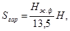
где Sгар - площадь под сооружения для хранения легковых автомобилей в балансе территории: а - жилого района м2/га; б - микрорайона, м2/га; Нж.ф - плотность жилого фонда, м2/га; Н - норма территории под гаражи и автостоянки по СНиП II-60-75*, м2/чел.; 13,5 - обеспеченность общей площадью на I очередь строительства (СНиП II-60-75*), м2/чел.
Рис. 3. Определение удельного расхода территории на 1
машино-место
при различных уровнях автомобилизации
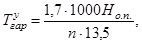
где 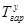
Общая площадь участков, необходимых для размещения сооружений для постоянного и временного хранения легковых автомобилей в балансе территории жилого района и микрорайона определяется в зависимости от плотности жилого фонда, а удельный расход территории - из расчета на машино-место. Эти показатели обусловливают выбор оптимальных типов автостоянок и гаражей в зависимости от расчетных уровней автомобилизации (рис. 2 и 3).
3.2. В зависимости от жилищной обеспеченности населения города (населенного пункта) или его части в условиях нового строительства в балансе территории селитебных зон в проектах следует выделять необходимые участки в соответствии с табл. 2.
Удельная площадь участков, необходимых для организации постоянного и временного хранения легковых автомобилей в жилом районе, микрорайоне (м2)
|
Норма жилищной обеспеченности, м2 на 1 жителя |
|||
|
13,5 |
18,0 |
23,0 |
|
|
Микрорайон |
|||
|
Гаражи |
0,2 |
1,6 |
2,0 |
|
Автостоянки: |
|||
|
постоянного хранения |
1,4 |
0,5 |
0,7 |
|
временного хранения |
0,4 |
0,5 |
0,7 |
|
Итого |
2,0 |
2,6 |
3,4 |
|
Жилой район |
|||
|
Гаражи |
- |
0,7 |
0,9 |
|
Автостоянки: |
|||
|
постоянного хранения |
0,5 |
- |
- |
|
временного хранения |
0,2 |
0,3 |
0,3 |
|
Итого |
0,7 |
1,0 |
1,2 |
|
Всего |
2,7 |
3,6 |
4,6 |
Примечания: 1. Полученные показатели базируются на данных прил. 5 и разд. 6 СНиП II-60-75 и зависят от вероятности развития сети автостоянок и гаражей во времени.
2. При другой норме жилищной обеспеченности удельные площади участков следует принимать по интерполяции.
3.3. В соответствии с удельными размерами территорий, выделяемых под гаражи и автостоянки, в табл. 3 приводится ориентировочное количество мест, предназначаемых для постоянного и временного хранения легковых автомобилей в жилой застройке.
Количество машино-мест для хранения легковых автомобилей в жилом районе и микрорайоне (авт/1000 жителей)
|
Площадь участка, м2/машино-место |
Норма жилищной обеспеченности, м2 на 1 жители |
||||||
|
13,5 |
18 |
23 |
|||||
|
Жилой район |
|||||||
|
Автостоянки: |
|||||||
|
постоянного хранения |
25 |
20 (1 место на 14 квартир) |
- |
- |
|||
|
временного хранения (в общественных центрах) |
25 |
8 |
12 |
12 |
|||
|
Всего |
28 |
12 |
12 |
||||
|
Гаражи |
|||||||
|
отдельные боксы |
35 - 45 |
- |
16 - 20 |
20 - 26 |
|||
|
(1 место на 14 - 18 квартир) |
(1 место на 11 - 18 квартир) |
||||||
|
блоки боксовые |
35 - 45 |
- |
- |
- |
|||
|
многоэтажные наземные |
15 - 20 |
- |
35 - 47 (1 место на 6 - 8 квартир) |
45 - 60 (1 место на 5 - 6 квартир) |
|||
|
подземные с использованием кровли |
12,5 - 25 |
- |
28 - 56 (1 место на 5 - 10 квартир) |
36 - 72 (1 место на 4 - 8 квартир) |
|||
|
комбинированные (многоэтажный и подземный) |
6 - 8 |
- |
88 - 117 (1 место на 2 - 3 квартиры) |
113 - 150 (1 место на 2 - 3 квартиры) |
|||
|
комбинированные различных типов |
23,5 |
- |
30 (1 место на 10 квартир) |
38 (1 место на 8 квартир) |
|||
|
Микрорайон |
|||||||
|
Автостоянки |
|||||||
|
постоянного хранения |
25 |
56 (1 место на 5 квартир) |
20 (1 место на 14 квартир) |
28 (1 место на 10 квартир) |
|||
|
временного хранения |
25 |
16 (1 место на 18 квартир) |
20 (1 место на 14 квартир) |
28 (1 место на 10 квартир) |
|||
|
Всего |
72 (1 место на 4 квартиры) |
40 (1 место на 7 квартир) |
56 (1 место на 5 квартир) |
||||
|
Гаражи |
|||||||
|
отдельные боксы |
35 - 45 |
4 (1 место на 70 квартир) |
35 (1 место на 8 квартир) |
45 (1 место на 6 квартир) |
|||
|
блоки боксов |
35 - 45 |
- |
- |
- |
|||
|
малоэтажные наземные |
15 - 20 |
10 (1 место на 29 квартир) |
80 (1 место на 4 квартиры) |
100 (1 место на 3 квартиры) |
|||
|
подземные с использованием кровли под автостоянку |
12,5 - 25 |
16 (1 место на 18 квартир) |
128 (1 место на 2 квартиры) |
160 (1 место на 1 - 2 квартиры) |
|||
|
комбинированные (многоэтажный и подземный) |
6 - 8 |
29 (1 место на 10 квартир) |
229 (1 место на 1 квартиру) |
286 (1 место на 1 квартиру) |
|||
|
многоэтажные наземные |
10 |
20 (1 место на 14 квартир) |
160 (1 место на 1 - 2 квартиры) |
200 (1 место на 1 квартиру) |
|||
|
комбинированные различных типов |
в среднем 23,5 |
9 (1 место на 31 квартиру) |
70 (1 место на 4 квартиры) |
90 (1 место на 3 квартиры) |
|||
3.4. При применении сочетаний различных типов гаражей берется средний показатель площади участка на одно машино-место. Количество машино-мест в гаражах на 1000 жителей (С) определяется по формуле
где Н - норма территории под гаражи и застройки в жилом районе и микрорайоне, м2/чел.;
Т - площадь участка на одно машино-место в гараже и на автостоянке, м2/авт.;
Количество квартир К на 1 машино-место определяется по формуле
где m - количество человек в семье (в табл. 3 принято 3,5 чел.).
3.5. На различных уровнях автомобилизации определяется набор типов сооружений, соответствующих по вместимости приведенному выше уровню. Определяется средняя площадь участков Ту (м2/маш.-место) и в соответствии с ней подбираются необходимые сооружения. Расчет ведется по формуле
где n - уровень автомобилизации данного района или микрорайона, авт./1000 жит.
Расчет уточненных показателей уровня автомобилизации может производиться в соответствии с прил. 7, a выбор типов сооружений постоянного и временного хранения и их вместимость уточняются в проектах с учетом совокупности градостроительных и природных условий.
3.6. Постоянное хранение легковых автомобилей и других мототранспортных средств следует предусматривать в гаражах и на автостоянках, размещаемых на периферии жилых районов и микрорайонов, на примыкающих к ним территориях или на отдельных участках, удаленных от школ, детских дошкольных учреждений, а также мест предназначенных для игр детей и отдыха населения с соблюдением нормируемой пешеходной доступности к местам постоянного жительства автовладельцев.
Размещение и подъемно-планировочное решение гаражей и автостоянок должно быть функционально и композиционно увязано с окружающей их архитектурно-пространственной и природной средой, не снижая при этом санитарно-гигиенических требований, предъявляемых к жилой застройке.
3.7. Гаражи и автостоянки, предназначенные для постоянного хранения легковых автомобилей, должны быть удалены от мест постоянного жительства их владельцев не далее чем на 800 м, что соответствует 8 - 10 минутам пешеходного пути (II и III климатические районы). В условиях реконструкции плотно застроенных районов нормативный показатель может быть обеспечен только на перспективу, а на I очередь и расчетный срок допускается его увеличение до 1200 м. При этом необходимо, чтобы сооружения хранения автомобилей находились вблизи линий прохождения общественного транспорта.
Автостоянки, предназначенные для временного хранения легковых автомобилей на перспективу, должны быть удалены от обслуживаемых ими жилых зданий не далее чем на 200 м.
Для городов и других населенных пунктов, расположенных в I и IV климатических районах, указанные в данном пункте расстояния следует сокращать не менее чем на 30 %.
3.8. При соблюдении нормируемых показателей доступности гаражи и автостоянки могут размещаться за пределами жилой застройки - в коммунально-складских зонах города, на функционально-специализированных территориях (зонах) хранения легковых автомобилей, в полосах отвода железных и скоростных автомобильных дорог, в зонах санитарных разрывов от промышленных предприятий, на перепадах рельефа и на других так называемых неудобных для жилищно-гражданского строительства территориях. При этом нормы удельной площади участков автостоянок и гаражей, размещаемых в жилых районах и микрорайонах и приведенные в табл. 2, могут быть сокращены пропорционально реальному числу мест постоянного и временного хранения легковых автомобилей, размещаемых за пределами жилой застройки.
3.9. Постоянное и временное хранение легковых автомобилей в городах и других населенных пунктах организуются: в усадебной застройке; в многоэтажной застройке - в центрах жилых районов и микрорайонов, жилых группах, квартирах жилых домов, жилых комплексах; функционально-специализированных зонах хранения легковых автомобилей жилого района и на неудобных для жилищно-гражданского строительства территориях. Примеры размещения гаражей и автостоянок в жилых районах приведены в прил. 12.
3.10. В условиях малоэтажной жилой застройки (5 этажей и менее, в том числе и низкоплотной 2 - 4-этажной) постоянное хранение легковых автомобилей допускается в простейших одноэтажных, отдельно стоящих, встроенных или пристроенных сооружениях (наземных, подземных, полуподземных).
В условиях усадебной застройки автостоянки и гаражи следует, как правило, размещать на участках автовладельцев.
3.11. Главным принципом градостроительного проектирования сети сооружений, предназначенных для постоянного и временного хранения легковых автомобилей в жилой застройке, является определение всех необходимых на перспективу участков и функционально-специализированных зон хранения и обслуживания, последовательность их использования на I очередь и расчетный срок.
3.12. В зависимости от местных (существующих и перспективных) градостроительных условий определяются принципы хранения легковых автомобилей и других мототранспортных средств в жилой застройке. При этом могут быть использованы:
открытые автостоянки на специальных участках, изолированных от транзитного движения, а также в карманах - уширениях проезжей части и на отдельных участках улиц местного значения, проездов, площадей и др. (рис. 4 - 7 и прил. 8);
одно и двухэтажные отдельно стоящие гаражи простейших типов, в том числе и одноэтажные группы или блоки боксов, размещаемые вдоль скоростных автомобильных и железных дорог, в зонах санитарных разрывов от промышленных предприятий, на перепадах рельефа, в оврагах, на склонах и др. (рис. 8, 9, 10);
многоэтажные отдельно стоящие открытые или закрытые гаражи манежного типа, с самоходным перемещением автомобилей по рампам. Как правило, они должны размещаться в функционально-специализированных зонах (прил. 8);
Рис. 4. Автостоянки в жилой застройке
а - с двух сторон проезда, б - на уширениях улицы, в - открытые площадки
Рис. 5. Автостоянки в двух уровнях для жилых районов
полуподземные или подземные, отдельно стоящие одноэтажные и двух-трехэтажные гаражи, размещаемые в жилых группах и микрорайонах (рис. 11 - 13);
встроенные и пристроенные наземные или подземные гаражи и автостоянки, решенные в комплексе с жилыми, административными, общественными и другими зданиями (рис. 14 в прил. 9).
Рис. 6. Автостоянки на 100 - 110 машино-мест:
а
- с озеленением только по периметру; б - с максимальным
использованием озеленения;
В - вахтер; М - стоянка для мотоциклов; С - смотровая яма.
Рис. 7. Размещение по периметру жилой застройки крупных
открытых автостоянок
(паркингов), совмещенных с местными улицами и магистралью районного значения:
1 - местная улица; 2 - магистральная улица; 3 - жилая застройка; 4 - автостоянки.
Рис. 8.
Схема автостоянок с использованием легких конструкций,
посадки деревьев и перепада рельефа.
Рис. 9. Схема гаража, совмещенного с дорогой (Д) и расположенного на крутом рельефе.
Рис. 10. Автостоянка сборной конструкции под террасой, с использованием разности отметок
а - план нижнего уровня, б - разрез по А-А, В - вахтер, М - стоянка для мотоциклов, С - смотровая яма
Рис. 11. Размещение гаражей под местными проездами
а - план
застройки; б - подземный уровень; 1 - жилые дома; 2 - улица
местного значения;
3 - автостоянки для временного хранения автомобилей; 4 - подземный
гараж.
Рис. 12. Пример размещения
автостоянок и гаражей в новых жилых
районах малого или среднего города
1 - жилые здания; 2 - общественные комплексы; 3
- гаражи 3 - 4-этажные;
4 - то же, 2-этажные; 5 - то же,
одноэтажные и автостоянки
Рис. 13. Пример размещения автостоянок и гаражей в новом жилом районе крупного города
1 - жилые здания; 2 - общественные комплексы; 3 - многоэтажные гаражи; 4 - автостоянки
Рис. 14. Подземные гаражи, построенные в комплексе с группой многоэтажных жилых домов
а - план подземного гаража, б - разрез
3.13. Участки, необходимые для размещения автостоянок и гаражей на I очередь, расчетный срок и перспективу, должны заблаговременно резервироваться и осваиваться по мере роста парка легковых автомобилей и других мототранспортных средств населения. Увеличение количества машино-мест на автостоянках и гаражах может осуществляться не только путем увеличения их количества, но и путем стадийного увеличения их емкости, например, в следующей последовательности:
Рис. 15. Варианты стадийного увеличения вместимости зоны хранения автомобилей
I: а - открытая автостоянка, б - подземный гараж, в - комбинированный надземно-подземный гараж расчетной вместимости;
II: а -
открытая автостоянка; б - многоэтажный гараж в сочетании с открытой
автостоянкой; в - многоэтажный гараж расчетной вместимости; 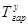
открытая автостоянка - наземный гараж расчетной вместимости;
открытая автостоянка - подземный гараж - многоэтажный гараж комбинированного наземно-подземного типа, расчетной вместимости (рис. 15). Пример формирования номенклатуры гаражей приведен в прил. 13.
Вместимость открытых охраняемых автостоянок, предназначенных для постоянного хранения, как правило, должна быть не менее 100 машино-мест. В крупнейших и крупных городах допускается увеличение вместимости автостоянок. Автостоянки могут быть оборудованы солнцезащитными навесами, ветрозащитными стенками, декоративным, солнцезащитным и шумозащитным озеленением (см. рис. 8).
3.14. В городах различной величины, в том числе и крупнейших и крупных городах при соответствующих обоснованиях, в виде исключения допускается использование на I очередь и расчетный срок различных типов отдельно стоящих малоэтажных гаражей, в том числе и одноэтажных групп и блоков боксов. Такие гаражи должны располагаться, как правило, вне жилой многоэтажной застройки. В средних и малых городах, поселках и сельских населенных пунктах такие сооружения можно предусматривать на расчетный срок и перспективу.
3.15. Владельцы автомобилей, проживающие в зоне усадебной и малоэтажной застройки городов и других населенных мест, могут использовать отдельно стоящие, одно- и двухместные, а также сблокированные или встроенные (при выполнении специальных мероприятий по газо- и звукоизоляции) боксовые гаражи из тонкостенных железобетонных плит, асбоцемента, местных материалов, в том числе сборно-разборные. Жилые дома, с которыми блокируются или в которые встраиваются гаражи боксового типа, должны иметь не более двух квартир, в противном случае они должны быть отделены от гаражей глухими несгораемыми стенками и перекрытиями.
3.16. Для инвалидов, имеющих легковые автомобили с ручным управлением, следует предусматривать, как правило, гаражи боксового типа, удаленные от места жительства автовладельцев не далее чем на 100 м.
Отдельные боксы или блоки боксов для инвалидов могут пристраиваться к глухим несгораемым стенам жилых, общественных, коммунально-хозяйственных и других зданий.
3.17. Основным типом гаража, предназначенным для постоянного хранения легковых автомобилей, в условиях многоэтажной (более 5 этажей) жилой застройки крупнейших и крупных городов на перспективу являются гаражи манежного типа, в том числе с частично углубленным первым этажом или одним - двумя подземными этажами.
3.18. Для экономии городских территорий на I очередь, расчетный срок и перспективу для хранения части легковых автомобилей в условиях многоэтажной застройки проектировать отдельно стоящие подземные или полуподземные одноярусные гаражи вместимостью до 100 машино-мест, с учетом характера существующей и проектируемой застройки, озеленения, подземных сетей и гидрогеологических условий.
В отдельных случаях, требующих согласования с органами пожарной охраны и гражданской обороны, допускается строительство подземных гаражей, имеющих два и более подземных ярусов вместимостью до 300 мест.
Для районов новой комплексной жилой застройки перспективны встроенные гаражи и автостоянки, размещаемые в цокольных и подземных этажах, а в отдельных случаях, при соответствующем обосновании, и в первых этажах специальных типов многоэтажных жилых домов с незастроенным или частично застроенным первым этажом, а также полуподземные гаражи и застройки, расположенные в комплексе с мастерскими ЖЭК, котельными, бойлерными, трансформаторными и другими зданиями и сооружениями коммунально-бытового и хозяйственно-технического назначения.
Подземные и полуподземные гаражи, расположенные под многоэтажными жилыми домами или под дворовыми участками, примыкающими к этим домам, допускается связывать со всеми вышерасположенными этажами не только лестницами, но и лифтами. В подземных гаражах должно быть не менее 25 маш.-мест на 1000 жителей.
3.19. При проектировании подземных и полуподземных гаражей и автостоянок, располагаемых под жилыми домами, общественными и другими зданиями, необходимо соблюдать следующие требования:
въезды, выезды и вытяжные вентиляционные шахты должны быть удалены от окон жилых домов не менее чем на 15 м;
первый этаж здания должен оставаться незастроенным или застраиваться частично. В нем могут размещаться нежилые помещения;
расстояние от окон рабочих помещений и общественных зданий до окон гаражей должно быть не менее 5 м.
3.20. На выбор типа гаража значительно влияют градостроительные и природные условия. Для сооружения гаражей и автостоянок целесообразно использовать территории с так называемыми слабыми грунтами или с крутым рельефом, непригодные для жилой застройки. Сокращение внутренних проездов и исключение рамп позволит значительно (до 20 %) снизить стоимость одного машино-места по сравнению с его вместимостью в надземных гаражах рампового типа.
Гаражи и автостоянки на сложном рельефе могут быть одноярусными и многоярусными с уступчатым расположением отдельных ярусов. При этом рационально строительство протяженных, прямолинейных или криволинейных лент гаражей, состоящих из отдельных боксов, общее количество которых в этих условиях лимитируется лишь условиями их пешеходно-транспортной доступности.
3.21. Для хранения легковых автомобилей в жилых районах следует предусматривать гаражи без технического обслуживания и ремонт, а в промышленных и коммунально-складских районах - с техническим обслуживанием.
3.22. Минимальным расстоянием до въездов в гаражи и на автостоянки и выездов из них следует принимать:
от перекрестков магистральных улиц районного значения (от границы проезжей части) - 35 м;
от зоны остановочного пункта массового пассажирского транспорта - 30 м.
Примыкания к магистралям общегородского значения выездов и въездов допускается только к их местным проездам.
3.23. В гаражах и на автостоянках малой вместимости (до 50 мест) допускаются совмещенные въезды и выезды шириной 3 - 3,5 м.
Гаражи и стоянки средней вместимости (от 50 до 300 мест) следует проектировать с раздельными въездами и выездами при минимальной ширине раздельной полосы 1 м.
В гаражах и на автостоянках большой вместимости (более 300 мест) следует устраивать раздельные въезды и выезды, которые необходимо размещать на расстоянии не менее 20 м один от другого.
Количество въездов и выездов для открытых автостоянок, а также территорий сблокированных боксов гаражей должно приниматься из расчета эвакуации всех автомобилей в течение одного часа.
Въезды и выезды из гаражей и автостоянок должны иметь закругления бортов, тротуаров и газонов радиусом не менее 8 м.
3.24. Перед воротами, преграждающими въезд на участок гаража и автостоянки постоянного хранения автомобилей, следует устраивать площадки накопления из расчета не менее 5 % вместимости гаража. Минимальная длина площадки накопления - 12 м.
3.25. Минимальные санитарные разрывы от наземных и комбинированных (наземно-подземных) гаражей и автостоянок легковых автомобилей до жилых и общественных зданий приведены в табл. 4.
3.26. В тех районах города, где необходима защита жилых и общественных зданий от транспортного шума (например, вдоль городских участков железных дорог и городских автомобильных дорог) допускается устройство одно- или двухэтажных наземных и полуподземных гаражей, выполняющих роль звукоизолированных экранов. Их также можно размещать в толще шумозащищенных озелененных насыпных валов в одном или нескольких ярусах.
Таблица 4
Минимальные санитарные разрывы между гаражами (автостоянками) и элементами застройки жилого района и микрорайона
|
Расстояния, м, от наземных, наземно-подземных и открытых автостоянок при количестве легковых автомобилей |
|||||
|
св. 300 |
300 - 101 |
100 - 51 |
50 - 11 |
менее 10 |
|
|
Жилые дома |
50 |
35 |
25 |
15 |
10 |
|
В том числе от торцов жилых домов без окон |
35 |
25 |
15 |
10 |
10 |
|
Общественные здания |
25 |
25 |
15 |
10 |
Не лимитируются |
|
Школы и детские ясли сады |
По согласованию с органами государственного санитарного надзора |
25 |
25 |
15 |
|
|
Лечебные учреждения стационарного типа |
То же |
50 |
50 |
25 |
|
Примечания: 1. Для жилых и общественных зданий санитарный разрыв следует определять от их окон до въездных и выездных ворот, вытяжных вентиляционных шахт и открывающихся окон наземных и наземно-подземных гаражей. Для школ, детских яслей-садов и лечебных заведений стационарного типа от границ их земельных участков.
2. При хранении в наземных гаражах смешанного парка автомобилей минимальные санитарные разрывы следует принимать не менее 25 м (до 50 автомобилей) и не менее 50 м (свыше 50 автомобилей).
3. Расстояния от подземных и полуподземных (без окон) гаражей до жилых домов и общественных зданий не лимитируются. Въезды и выезды из них, а также их вытяжные вентиляционные шахты должны быть удалены от окон жилых домов и общественных зданий на расстоянии не менее 15 м, а от участков школ, детских яслей-садов и лечебных учреждений стационарного типа на расстоянии не менее 20 м.
4. Участки гаражей и автостоянок должны быть отделены от жилых и общественных зданий полосой защитного озеленения (с посадкой не менее 2 рядов кустарников). В ряде случаев допускается создание автостоянок с посадкой деревьев (рис. 16).
Рис. 16. Автостоянка, совмещенная с посадкой деревьев.
3.27. В отдельных случаях, например, при реконструкции застройки, когда необходимо сохранить здания, имеющие высокую историческую и культурную ценность, под всем дворовым участком возможно устройство сплошного перекрытия с частичным заглублением на 1 - 2 м для размещения под ним расчетного количества мест постоянного и временного хранения автомобилей.
АВТОСТОЯНКИ И ГАРАЖИ В ЦЕНТРАЛЬНОЙ ЧАСТИ ГОРОДА
3.28. В зависимости от характера и продолжительности временного хранения легковых автомобилей у объектов различного назначения должны быть организованы:
автостоянки большой продолжительности хранения (периодического и эпизодического пользования) у предприятий, учреждений и других зданий и сооружений аналогичного назначения, где автомобили рабочих, служащих и посетителей находятся на протяжении рабочего дня - от восьми и более часов;
автостоянки средней продолжительности хранения, например, у стадионов, Дворцов культуры, залов собраний, театров, кинотеатров, концертных залов, крупных ресторанов и других зданий и сооружений аналогичного назначения, где автомобили посетителей находятся в среднем на протяжении двух - четырех часов;
автостоянки кратковременной продолжительности хранения - у железнодорожных, аэро- и других вокзалов, торговых центров, универсальных магазинов, крытых рынков, крупных кафе-закусочных и других зданий и сооружений аналогичного назначения, где автомобили посетителей находятся в среднем не более одного часа.
3.29. Характер и продолжительность хранения легковых автомобилей у объектов различного назначения должны быть взаимоувязаны с принципами размещения автостоянок. Основные, наиболее общие принципы градостроительно-планировочной организации временного хранения легковых автомобилей различного назначения и различных функциональных зонах городов и других населенных пунктов приведены в прил. 2.
3.30. В центральной части города необходимо предусматривать единую и планомерно развивающуюся сеть сооружений и устройств, предназначенных для временного хранения всех легковых автомобилей (индивидуальных, ведомственных, специальных, такси и проката), включающую в себя различные типы автостоянок у всех объектов массового посещения. В отдельных случаях при специальных технико-экономических обоснованиях на расчетный срок и перспективу в крупнейших и крупных городах допускается проектирование автостоянок в многоэтажных наземных или подземных сооружениях.
При формировании сети автостоянок и гаражей в центральной части города могут быть рекомендованы следующие варианты:
в средних и больших городах автостоянки в центральной части города размещаются приближенно к обслуживаемым ими объектам и к пешеходным зонам;
в крупных городах сеть автостоянок, приближенных к обслуживаемым ими объектам и пешеходным зонам, дополняется автостоянками средней и длительной продолжительности, которые располагаются на периферии центрального района;
в крупнейших городах помимо указанных выше приемов целесообразно дополнительно развивать сеть автостоянок большой вместимости, рассчитанных на 500 и более машино-мест, непосредственно связанных с конечными станциями метрополитена, крупными пересадочными узлами, железнодорожными платформами и узлами концентрации остановочных пунктов общественного транспорта. Схема размещения автостоянок и гаражей в центральном районе города приведена на рис. 17.
3.31. Вместимость автостоянок у отдельных зданий и сооружений массового посещения, расположенных в центральной части города (населенного пункта), следует рассчитывать с учетом норм, приведенных в табл. 5.
Рис. 17.
Схемы размещения автостоянок и гаражей в центральной
части городов различной величины:
а - средние и
большие города; б - крупные города; в - крупнейшие города; 1
- стоянки у объектов массового
посещения; 2 - стоянки общего пользования; 3 - скоростные дороги
и магистрали непрерывного движения;
4 - пешеходные зоны; 5 - остановочные пункты и пересадочные узлы;
6 - улицы регулируемого движения;
7 - внеуличный скоростной транспорт (метро, железные дороги); 8 -
крупные стоянки (паркинги) у
станций скоростного транспорта; заштрихованы общегородские и специализированные
центры.
Таблица 5
Количество машино-мест на стоянках у отдельных общественных зданий и сооружений массового посещения
|
Общественные здания и coopужения массового посещения |
Расчетная единица |
Количество машино-мест на расчетную единицу |
||
|
I очередь |
расчетный срок |
перспектива |
||
|
1. Министерства, центральные учреждения, административно-хозяйственные, общественные, научные и проектные организации с большим числом посетителей, превышающих количество работающих |
На 100 работающих |
3 - 5 |
5 - 10 |
10 - 20 |
|
То же, с малым числом посетителей |
То же |
1 - 3 |
3 - 5 |
5 - 7 |
|
2. Высшие учебные заведения, университеты |
На 100 преподавателей |
3 - 5 |
5 - 10 |
10 - 15 |
|
3. Предприятия торговли и общественного питания: |
||||
|
а) рестораны и кафе общегородского значения |
На 100 мест в залах |
3 - 5 |
5 - 10 |
10 - 15 |
|
б) торговые центры, универмаги, магазины площадью торговых залов более 500 м3 |
На 100 м2 торговой площади |
1 - 2 |
2 - 3 |
3 - 5 |
|
в) крытые рынки |
На 50 торговых мест |
7 - 10 |
10 - 20 |
20 - 25 |
|
г) специализированные предприятия торговли |
На 100 м2 торговой площади |
1 - 2 |
2 - 3 |
3 - 5 |
|
4. Учреждения культуры и искусства |
||||
|
а) театры, цирки, кинотеатры, концертные залы, Дома творчества |
На 100 мест или единовременных посетителей |
3 - 5 |
5 - 10 |
10 - 15 |
|
б) парки культуры и отдыха |
То же |
2 - 3 |
3 - 5 |
5 - 7 |
|
5. Предприятия бытового обслуживания населения (Дома быта) |
На 50 рабочих мест |
3 - 5 |
5 - 10 |
10 - 20 |
|
6. Гостинцы высших разрядов: |
На 100 мест |
3 - 5 |
5 - 10 |
10 - 20 |
|
а) прочие гостиницы |
То же |
2 - 4 |
4 - 6 |
6 - 8 |
|
7. Лечебно-профилактические учреждения: |
||||
|
а) больницы, диспансеры, родильные дома |
На 100 коек |
1 - 2 |
2 - 3 |
3 - 5 |
|
б) поликлиники |
На 500 посещений в смену |
3 - 5 |
5 - 10 |
10 - 15 |
|
8. Спортивные здания и сооружения городского значения с открытыми трибунами вместимостью более 5000 зрителей (стадионы) и крытыми трибунами вместимостью более 500 зрителей (залы, корты, бассейны) |
На 100 мест |
1 - 2 |
2 - 3 |
3 - 5 |
|
9. Вокзалы (железнодорожный, речной, морской, автомобильный) и аэропорты |
На 100 пассажиров, прибывающих в часы «пик» |
3 - 5 |
5 - 10 |
10 - 15 |
Примечания: 1. Минимальные нормы в табл. 5 пп. 3, 5, 6 даны для городов с относительно низким уровнем автомобилизации на перспективу (120 - 150 автомобилей на 1000 жителей), максимальные для городов с относительно высоким уровнем автомобилизации (180 - 220 автомобилей на 1000 жителей).
2. В зависимости от местных условий и при соответствующих обоснованиях для учреждений, указанных в пп. 1, 2, 3а, 3б, 4а, 6, 8 и 9 допускается увеличивать расчетное количество машино-мест, но не более чем на 25 %.
3. Стоянки для учреждений, указанных в пп. 3а, 3г, 4а и 6, рекомендуется группировать в стоянки общего пользования, чтобы их вместимость была не менее 20 машино-мест.
3.32. Длина пешеходных подходов до открытых автостоянок и гаражей временного и кратковременного хранения (независимо от принятого принципа их размещения) от обслуживаемых ими объектов должна быть дифференцирована по условиям размещения и по назначению соответствующих объектов и не должна превышать:
150 м от пассажирских помещений вокзалов, железнодорожных платформ, входов в метро, учреждений торговли и общественного питания (торговые центры, универсальные магазины, крытые рынки, крупные рестораны и кафе-закусочные) - при кратковременной продолжительности хранения автомобилей;
300 м от прочих учреждений культурно-бытового обслуживания населения и административных зданий - при средней и большой продолжительности хранения автомобилей;
600 м от входов в парки общегородского значения, лесопарки, крупные выставочные комплексы, стадионы и крытые спортивные залы - при стоянке у объектов отдыха, спорта и развлечений.
3.33. В нейтральной части крупнейших, крупных и больших городов допускается применять те же устройства и сооружения, что и в жилой зоне (кроме гаражей боксового типа).
3.34. Для относительно продолжительного, средней продолжительности и относительно кратковременного хранения в центральных частях городов и других населенных пунктов в первую очередь необходимы открытые автостоянки, которые, как правило, следует предусматривать вне проезжей части улиц и площадей, на специальных изолированных от транзитного движения участках с внутренними проездами, обеспечивающими беспрепятственный выезд любого автомобиля. При этом автомобили устанавливаются в два ряда перпендикулярно или под углом к продольной оси проезда.
С целью рационального использования открытых автостоянок их следует проектировать, как правило, укрупненными вместимостью от 50 до 300 машино-мест с учетом характера посещения обслуживаемых ими объектов (в утренние, дневные и вечерние часы, например, с 8 до 18 часов - административное здание или крытый рынок, с 19 до 23 часов - театр, цирк или концертный зал).
При размещении автостоянок большой вместимости (300 машино-мест и более) целесообразно предусматривать возможность последующего увеличения их емкости путем строительства на их участках многоэтажных гаражей, в том числе механизированных и подземных. Возможность такой трансформации должна быть заранее увязана с планировкой и застройкой района, а также с трассированием магистральных подземных коммуникаций.
3.35. В центральной части крупнейших и крупных городов допускается строительство наземных многоэтажных гаражей. В качестве эталона можно принимать рамповый гараж манежного типа высоты до пяти-шести этажей и вместимостью до 500, а в исключительных случаях - до 1000 машино-мест. Во всех сооружениях такого типа целесообразно устраивать один - два подземных яруса, что позволяет экономить городские территории, сокращает высоту вертикального перемещения автомобилей и время их установки.
3.36. При реконструкции крупнейших и крупных городов, особенно их центральных районов, целесообразно строительство подземных гаражей у отдельных зданий и комплексов массового посещения. При этом достигается экономия дефицитных городских земель, создаются предпосылки для размещения автостоянок и гаражей в тех наиболее важных пунктах города, где по градостроительным условиям недопустимо введение вообще каких-либо зданий и устройств, например, в центре площади или под проезжей частью улицы или проезда.
Под административными зданиями или под прилегающими к ним земельными участками допускается устройство подземных и полуподземных автостоянок для временного хранения. При этом встроенные и пристроенные гаражи, в том числе и подземные, могут связываться со всеми внутренними этажами не только лестницами, но и лифтами, с обязательным устройством специальных звуко- и газоизолирующих шлюзов.
Вместимость отдельно стоящих или встроенных гаражей определяется количеством секций. В одной секции подземного гаража, изолированной несгораемыми стенами и перекрытиями, должно быть не более 100 машино-мест. Допускается использование общих подземных проездов, обслуживающих въезды и выезды из нескольких подземных секций таких гаражей.
Оптимальная вместимость подземных автостоянок, располагаемых под крупнейшими административными зданиями 50 - 300 машино-мест. Подземные гаражи-стоянки должны иметь не более двух, в отдельных случаях, требующих обоснований трех и более подземных этажей.
При проектировании крупных подземных автостоянок следует обеспечивать удобные переходы от них к обслуживаемым ими зданиям массового посещения. В отдельных случаях в общей цокольной части двух или нескольких зданий допускается размещать автостоянки, склады, подъезды к ним и другие технические и вспомогательные помещения.
3.37. Целесообразность использования подземного пространства под административными зданиями для размещения автостоянок определяется с помощью коэффициента планировочных показателей (КПП), представляющего собой по предложению ЦНИИЭП комплексов и зданий культуры, спорта и управления им. Б.С. Мезенцева отношение суммарной полезной площади всех наземных этажей зданий к площади земельного участка, принимаемого в соответствии с табл. 6.
Зависимость между коэффициентом планировочных показателей и количеством мест в подземных и полуподземных автостоянках
|
Количество мест на автостоянках и в гаражах, рекомендуемых для размещения в подземных и полуподземных сооружениях, % |
|
|
1,3 - 1,5 |
Не рекомендуется |
|
2,0 |
20 - 30 |
|
2,5 |
40 - 50 |
Примечание. В предварительных расчетах для центральных районов крупнейших городов КПП допускается принимать в пределах 2,0 - 2,5; для периферийных районов и пригородов этих городов - 1,3 - 1,5.
3.38. На перспективу в крупнейших городах с населением более 1 млн. чел. допускается учитывать вероятность строительства механизированных и автоматизированных гаражей высотой до 10 и более ярусов вместимостью 500 - 1000 автомобилей.
Оптимальная вместимость этих сооружений ограничена пропускной способностью лифтов в час «пик» и обычно не превышает 400 - 500 автомобилей; для предварительных расчетов принимается один лифт на 100 автомобилей. При наличии 10 - 12 ярусов хранения на 1 машино-место может приходиться не более 2 - 3 м2 площади участка. Стоимость механизированных гаражей больше рамповых в 2 - 3 раза; строительство их может быть рекомендовано только в центральных районах городов и только на перспективу при наличии в городе до 100 - 120 и более автомобилей на 1000 жителей.
ГАРАЖИ И АВТОСТОЯНКИ В ПРОМЫШЛЕННЫХ И КОММУНАЛЬНО-СКЛАДСКИХ ЗОНАХ
3.39. В промышленных и коммунально-складских зонах города размещаются комплексные гаражи легковых ведомственных и специальных автомобилей, таксомоторные и прокатные парки, а также предприятия технического обслуживания и базы сезонного хранения легковых автомобилей (базы консервации).
3.40. Количество машино-мест в гаражах и на автостоянках у отдельных предприятий и учреждений промышленных и коммунально-складских зон городов и поселков определяется по табл. 7.
Таблица 7
Количество машино-мест в гаражах и на автостоянках у отдельных предприятий и учреждений промышленной и коммунально-складской зоны городов и поселков
|
Расчетная единица |
Количество машино-мест на расчетную единицу |
|||
|
I очередь |
расчетный срок |
перспектива |
||
|
1. Предзаводские площади и площади других предприятий |
На 100 работающих в двух наибольших смежных сменах |
2 - 4 |
4 - 7 |
7 - 10 |
|
2. Научно-технические и учебные центры |
На 100 работающих |
3 - 5 |
5 - 10 |
10 - 15 |
|
3. Административно-хозяйственные учреждения |
То же |
2 - 3 |
3 - 5 |
5 - 7 |
|
4. Крупные предприятия общественного питания, торговли и коммунально-бытового обслуживания |
На 100 мест в залах или 100 единовременных посетителей и персонала |
2 - 4 |
4 - 7 |
7 - 10 |
Примечание. В зависимости от местных условий и при соответствующих обоснованиях для предприятий ведущих отраслей промышленности допускается увеличение расчетного количества машино-мест, указанных в п. 1, но не более чем на 25 %.
3.41. Открытые автостоянки у предприятий и учреждений промышленных и коммунально-складских зон города следует размещать с учетом того, чтобы пешеходные пути между ними и проходными не пересекали магистралей и дорог с интенсивным движением наземного транспорта.
3.42. Пешеходную доступность от проходной промышленного предприятия или вестибюля административно-служебного здания до автостоянки следует принимать не более 400 м, а для I и IV климатических районов - до 250 м. Для уменьшения количества машин, хранящихся зимой в жилой зоне на открытых автостоянках, в промышленно-складских районах города допускается размещение гаражей (баз консервации вместимостью до 500 - 1000 и более машино-мест), предназначенных для сезонного хранения автомобилей.
АВТОСТОЯНКИ В ЗОНАХ МАССОВОГО ОТДЫХА
3.43. При проектировании сооружений и устройств для временного хранения индивидуальных автомобилей во всех зонах отдыха города и пригородной зоны должны быть определены:
расчетное количество мест организованного хранения легковых автомобилей и других мототранспортных средств, дислокация и размеры отдельных автостоянок, обеспечивающих пешеходную доступность объектов и районов массового отдыха;
предел насыщения районов отдыха легковыми автомобилями с учетом имеющейся рекреационной площади, ожидаемого количества посетителей и условий сохранения природной среды.
3.44. Расчетное количество машино-мест на автостоянках для временного хранения у отдельных объектов в зонах массового отдыха рекомендуется принимать по табл. 8.
Таблица 8
Количество машино-мест на автостоянках в зонах массового отдыха
|
Наименование объектов (пункт тяготения) в зоне отдыха |
Расчетная единица |
Количество машино-мест на расчетную единицу |
||||
|
I очередь |
расчетный срок |
перспектива |
||||
|
1 Пляжи и парки в зонах отдыха |
На 100 единовременных посетителей |
2 - 3 |
3 - 5 |
5 - 7 |
||
|
2. Лесопарки и заповедники |
То же |
2 - 4 |
4 - 7 |
7 - 10 |
||
|
3. Загородные базы отдыха (спортивные, лыжные, рыболовные, охотничьи, туристические и др.) |
На 100 посетителей |
2 - 3 |
3 - 5 |
5 - 7 |
||
|
4. Береговые базы маломерного флота |
То же |
2 - 4 |
4 - 7 |
7 - 10 |
||
|
5. Дома отдыха и санатории |
На 100 отдыхающих и персонала |
1 - 2 |
2 - 3 |
3 - 4 |
||
|
6. Загородные гостиницы |
То же |
1 - 2 |
2 - 3 |
3 - 4 |
||
|
7. Мотели и кемпинги |
- « - |
По расчетной вместимости |
||||
|
8. Предприятия общественного питания, торговли и коммунально-бытового обслуживания в зонах отдыха |
На 100 мест в залах или 100 единовременных посетителей и персонала |
2 - 4 |
4 - 7 |
7 - 10 |
||
|
9. Садовые участки, дачи |
На 10 участков |
2 - 4 |
4 - 7 |
7 - 10 |
||
3.45. Основным типом сооружений для временного хранения легковых автомобилей и других мототранспортных средств населения в пригородных зонах массового отдыха являются открытые автостоянки.
3.46. В отдельных случаях при соответствующих технико-экономических обоснованиях допускается предусматривать строительство двух- и трехэтажных автостоянок, располагаемых в специальных наземных сооружениях, а также на перепадах рельефа.
3.47. Предельная вместимость сооружений временного хранения у отдельных объектов массового отдыха должна быть ограничена допустимой по экономическим соображениям нагрузкой на рекреационную среду (табл. 9). При этом необходимо учитывать затраты времени на пешеходный подход от автостоянок до отдельных объектов отдыха в пределах 8 мин (условная длина пешеходного пути 450 м). В городах-курортах, городах-заповедниках и центрах туризма эти затраты допускается увеличивать до 15 мин (условная длина пешеходного подхода 1000 м), а при режимном использовании реакционных территорий с использованием подвозящего общественного транспорта - до 25 мин.
Предельная вместимость сооружений временного хранения у отдельных объектов массового отдыха
|
Обслуживаемая (регенерационная) площадь, га |
Вместимость стоянок, машино-мест |
|
|
Естественный (необорудованный) пляж |
25 |
200 |
|
Оборудованный пляж массового купания |
100 |
500 |
|
Лес |
50 |
100 |
|
Луг с озерами и мелкими реками |
20 |
150 |
|
Объекты посещения туристов (памятники истории, архитектуры и др.) |
- |
200 |
|
Отдельно стоящие природные реликты |
- |
50 |
3.48. В городах-курортах и городах-заповедниках (историко-революционных, архитектурно-мемориальных и др.) автостоянки необходимо размещать за пределами охранных зон с радиусом доступности не более 25 минут. При определении их вместимости следует учитывать сезонную и суточную неравномерность прибытия посетителей, устанавливаемую специальными наблюдениями, увязав расчетные данные с задачами сохранении архитектурного облика и с учетом характера использования заповедных зон.
При размещении автостоянок в городах-курортах и городах-заповедниках, центрах туризма, природных парках и вблизи крупных оборудованных пляжей обслуживание отдыхающих рекомендуется осуществлять по принципу «стоянка остановка массового пассажирского транспорта», увязав их с системой стоянок туристских автобусов.
В зоне коллективных садов автостоянки необходимо размещать на каждом садовом или дачном участке. Рекомендуется также для каждой группы участков организовывать общую автостоянку.
4.1. Сеть сооружений, предназначенных для постоянного и временного хранения легковых автомобилей, а также других мототранспортных средств должна включать в себя следующие основные объекты:
открытые и закрытые автостоянки преимущественно общего пользования для паркирования государственных и индивидуальных транспортных средств;
гаражи и автостоянки, предназначенные для постоянного хранения легковых автомобилей.
4.2. Основные объемно-планировочные элементы гаражей и автостоянок определяются геометрическими параметрами расчетных типов автомобилей, условиями их движения и маневрирования.
Для легковых автомобилей в качестве расчетного следует принимать «эталонный» малолитражный автомобиль с размерами в плане 180´410 см (наибольший по габаритам автомобиль из наименьшей группы легковых автомобилей) с минимальными расстояниями между смежными машинами либо между автомобилем и торцевой или продольной стеной гаража.
С учетом минимально допустимых зазоров (50 см) расчетная площадь автостоянки, необходимой дли одного «эталонного» малолитражного автомобиля без учета площади, необходимой для маневрирования, составит 230´460 см, а для средних легковых автомобилей типа «Волга» (ГАЗ-21 и ГАЗ-24) - 250´530 см. Для кратковременных и временных автостоянок допускается принимать расчетную площадь стоянки 250´500 см. В гаражах и на стоянках индивидуальных владельцев зазоры безопасности допускается увеличивать до 70 см.
4.3. Способы расстановки легковых автомобилей и других мототранспортных средств на автостоянках подразделяются в зависимости от расположения мест хранения по отношению к проездам, угла расстановки, количества рядов хранений (см. прил. 10).
В зависимости от расположения мест хранения по отношению к проездам различают односторонние автостоянки - с установкой машин только с одной стороны проезда, и двусторонние - вдоль обеих противоположных сторон проезда. Односторонние автостоянки по удельной площади, приходящейся на одно машино-место, являются неэкономичными, если они не совмещены с местным или внутримикрорайонным проездом.
В соответствии с углом установки автомобиля по отношению к продольной оси проезда могут быть использованы параллельные, перпендикулярные и косоугольные схемы, построенные под углом 30°, 45° и 60°.
По количеству рядов хранения различают однорядные и многорядные схемы расстановки автомобилей. Однорядная схема обеспечивает независимый въезд или выезд любого автомобиля в любое время. При многорядных схемах автомобиль устанавливается «в хвост» предыдущему и выезд его возможен только путем маневрирования. Зависимая многорядная расстановка допускается только на базах консервации, пунктах диагностики, станциях технического обслуживания.
На открытых автостоянках и в гаражах, предназначенных для кратковременного и временного хранения автомобилей, рекомендуется двусторонняя косоугольная расстановка. При этом допускается расстановка автомобилей под углами от 30° до 60° к продольной оси проезда. Суммарная площадь, приходящаяся на одно машино-место по отношению к прямоугольной расстановке, увеличивается на 20 - 25 %, но несколько облегчаются условия постановки машины на стоянку и ее выезда.
При расчете количества мотоциклов, которые могут быть расставлены на стоянках и в гаражах, принимаются следующие габариты: мотоцикл с коляской - 240´170 см; мотоцикл-одиночка - 240´80 см.
Расстояния между мотоциклами принимаются не менее 50 см.
Масса установки отдельных экипажей (автомобилей, мотоциклов и др.), а также указатели направления движения должны быть размечены на проезжей части автостоянок и гаражей.
4.4. Высота этажа в наземных и подземных гаражах рампового типа должна составлять в чистоте 2,0 м. В механизированных и автоматизированных гаражах высота может быть снижена (при условии использования специальных устройств для установки автомобиля на место без запуска двигателей) до 1,7 - 1,8 м.
В помещениях технического обслуживания и ремонта, оборудованных подъемными механизмами, высота этажа в чистоте должна быть не менее 3,9 м.
4.5 Внутренние проезды в гаражах и на автостоянках проектируются на две полосы движения (по две машины в ряд). Минимальный радиус поворотов для малолитражных эталонных автомобилей 5,5 м, для легковых автомобилей среднего класса - 6,5 м.
Движение автомобилей в пределах гаража или стоянки должно быть правосторонним, поточным, а при вместимости более 100 машино-мест - без пересечений потоков движения.
4.6. Для самоходного перемещения автомобилей по вертикали рампы могут проектироваться наружными (при высоте здания гаража не более 2 этажей) с уклоном не более 10 % и внутренними. Внутренние рампы могут быть прямолинейными в плане (с уклоном не более 16 %) и криволинейными (с уклоном не более 13 %), по высоте подъема различают полные рампы (на этаж) и полурампы (на полэтажа). По количеству полос движения рампы могут быть одно- и двухпутные. При соответствующих обоснованиях и согласовании проекта с органами пожарной охраны в гаражах для хранения легковых автомобилей могут использоваться рампы непрерывного движения (так называемые наклонные полы) с уклонами не более 4 %.
4.7. В зависимости от наличия средств технического обслуживания и ремонта различают:
комплексные гаражи, предназначенные в основном для ведомственных автомобилей и такси. Помимо хранения в них производится профилактика и различные ремонты с заменой агрегатов, узлов и деталей, механизированная мойка, а в ряде случаев - заправка;
некомплектные гаражи, в которых помимо хранения осуществляются только несложные операции - ежедневный осмотр, мелкие ремонты, шланговая мойка. В городской застройке для легковых автомобилей следует проектировать только некомплектные гаражи.
Помимо главных классификационных признаков городские гаражи и автостоянки различаются по отношению к отметке поверхности земли, этажности, устройствам для перемещения автомобилей по вертикали, внутренней планировке зоны стоянки, характеру ограждающих конструкций и инженерному оборудованию, вместимости и др.
В зависимости от расположения по отношению к отметкам поверхности земли различают наземные, полуподземные, a также комбинированные сооружения. Подземными считаются сооружения, полностью заглубленные в грунт, полуподземными - пол основных помещений которых заглублен менее чем на 2 м ниже поверхности земли, комбинированными - надземные сооружения, имеющие отдельные подземные или полуподземные помещения и этажи.
По этажности различают одноэтажные и многоэтажные гаражи и автостоянки. Гаражи высотой от 2 до 5 этажей являются сооружениями средней этажности; более 5 этажей - большой этажности.
По устройствам для перемещения автомобилей по вертикали многоэтажные гаражи и автостоянки подразделяются на следующие группы:
рамповые (с самоходным перемещением автомобилей по наклонным поверхностям) - с наружными, которые допускаются только при высоте подъема на один-два этажа и внутренними рампами; с полурампами, образованными смещением отдельных плоскостей перекрытий по высоте; со скатными (наклонными) полами-перекрытиями;
механизированные, оборудованные подъемниками для вертикального перемещения автомобилей;
автоматизированные или «гаражи-автоматы», в которых установка и выдача автомобилей производится без запуска двигателя.
По внутренней планировке автостоянки могут быть: манежного типа с открытыми местами хранения автомобилей, расположенными в едином зальном помещении; боксовые - с выездом из каждого изолированного огражденного места (бокса) наружу или во внутренний проезд, а также комбинированные.
По характеру ограждающих конструкций: сооружения со стенами и без ограждающих стен (гаражи и автостоянки-этажерки).
По характеру инженерного оборудования гаражи могут быть отапливаемыми, с водопроводом и канализацией и без них, с искусственной вентиляцией, оборудованными специальными информационными и другими системами.
В зависимости от количества мест хранения различают гаражи и автостоянки: малой вместимости (до 50 машино-мест), средней вместимости (от 50 до 300 машино-мест) и большой вместимости (более 300 машино-мест).
Автостоянки и гаражи могут быть общего пользования, без ограничения круга лиц, пользующихся ими, или ограниченного пользования, предназначенных только для обслуживания определенных учреждений и клиентуры.
В зависимости от архитектурно-планировочного решения здания гаражей и автостоянок могут быть отдельно стоящими, решенными в виде отдельных сооружений, а также встроенными в объем другого здания или пристроенными к нему, где это допускается нормами (прил. 8 - 9).
Зависимая многорядная расстановка допускается только на базах консервации и станциях технического обслуживания.
5.1. Сооружения технического обслуживания легковых автомобилей и других мототранспортных средств следует размещать в основном в промышленной и коммунально-складской зонах, а также на магистральных улицах и дорогах, у границы городской черты, преимущественно с правой стороны при въезде в город.
При проектировании сети сооружений технического обслуживания легковых автомобилей в городах следует принимать:
общее количество постов на станциях технического обслуживания (СТО), необходимых в целом по городу (1 пост - на 180 легковых автомобилей);
при станциях технического обслуживания предусматривать посты механизированной мойки. Один пост, оборудованный устройством подогрева воздуха и сушки кузова, должен обслуживать до 200 легковых автомобилей в смену;
общее количество колонок для заправки топливом, необходимых в целом по городу следует рассчитывать по норме - 1000 легковых автомобилей на 1 колонку автозаправочной станции (АЗС).
5.2. Станции технического обслуживания в зависимости от количества постов подразделяются на станции при автозаправочных станциях с отдельными постами мойки и смазки (до 5 постов), а также станции обслуживания на 10, 15, 25, 50 и более постов. На станциях при АЗС производится ограниченный круг работ и услуг по обслуживанию легковых автомобилей. Остальные станции выполняют все виды обслуживания и ремонта, продажу запасных частей, автомобилей (на СТО от 25 постов и более).
5.3. Площади участков станции технического обслуживания приведены в табл. 10.
5.4. Автозаправочные станции должны размещаться преимущественно на магистральных улицах и дорогах у въездов в город в комплексе с крупными гаражами и автостоянками, а также в зонах сосредоточения автомобилей (у общественно-транспортных узлов, у вокзалов, стадионов, рынков).
На автозаправочных станциях могут осуществляться мелкие технические услуги и продажа наиболее ходовых частей (по ограниченному перечню), и, как вариант, - мойка и смазка автомобилей и других транспортных средств населения.
Площади участков станций технического обслуживания
|
Площадь участка, га |
|
|
При АЗС (с постами мойки и смазки) |
0,4 |
|
На 10 постов |
1,0 |
|
На 15 постов |
1,5 |
|
На 25 постов, без продажи автомобилей |
2,0 |
|
На 25 постов, с продажей автомобилей |
2,6 |
|
На 50 постов |
3,5 |
|
Центры обслуживания на 100 и более постов |
По индивидуальным проектам |
Примечания: 1. Примерные соотношения мощности количества СТО для различных городов даны в прил. 14.
2. Минимальные санитарные разрывы от СТО до жилых домов, гостиниц, школ и дошкольных учреждений следует принимать для СТО, имеющих более 20 постов - 50 м; от 10 до 20 постов - 25 м; менее 10 постов - 15 м.
5.5. При расчете площади участков автозаправочных станций рекомендуется пользоваться данными, приведенными в табл. 11.
Основные показатели и площади участков автозаправочных станций
|
Автозаправочные станции с количеством колонок |
||||
|
5 |
7 |
9 |
11 |
|
|
Суточное количество заправок |
250 |
500 |
750 |
1000 |
|
Общая емкость (топливных резервуаров и их количество, м3/шт.) |
160/4 |
160/6 |
200/8 |
250/10 |
|
Площадь участка (без учета подъездов), га |
0,2 |
0,3 |
0,35 |
0,4 (0,6) |
Примечание. Для приближенных расчетов пропускную способность одной колонки допускается принимать равной 60 индивидуальных автомобилей в сутки.
5.6. При проектировании автозаправочных станций следует соблюдать следующие санитарные разрывы от них до жилых и общественных знаний:
50 м - до АЗС с постами мойки и смазки всех автомобилей (легковых, специальных и грузовых) независимо от их мощности, а также для АЗС, рассчитанных на заправку более 750 легковых автомобилей в сутки;
25 м - до АЗС, рассчитанных на заправку 750 и менее легковых автомобилей в сутки.
Между АЗС всех типов и промышленными зданиями санитарные разрывы определяются в соответствии с нормами пожарных разрывов. Санитарные разрывы следует исчислять от заправочных колонок, дыхательных устройств резервуаров, вытяжных вентиляционных шахт постов обслуживания.
5.7. У въездов в крупнейшие, крупные и большие города необходимо проектировать моечные пункты с расчетной мощностью не менее 250 легковых автомобилей в смену.
Индивидуальные легковые автомобили - легковые автомобили, находящиеся в частной собственности граждан, за исключением ведомственных и специальных легковых автомобилей (в том числе производственных, санитарных, пожарных, милиции, доставки почты и мелких партий грузов), а также легковых автомобилей такси и проката.
Мототранспортные средства, принадлежащие гражданам - все виды четырехколесного, трехколесного и двухколесного уличного транспорта, оборудованные механическими двигателями (мотоциклы, мотороллеры, мотоколяски и мопеды).
Уровень автомобилизации включает два основных показателя - общее количество всех легковых автомобилей, приходящихся на 1000 жителей (включая ведомственные, специальные, автомобили такси и проката) и количество индивидуальных легковых автомобилей, приходящихся на 1000 жителей.
Уровень моторизации также включает два основных показателя - общее количество всех мототранспортных средств (включая ведомственные и специальные) и количество индивидуальных мототранспортных средств, приходящихся на 1000 жителей.
Постоянное (круглосуточное) хранение легковых автомобилей и других мототранспортных средств следует, как правило, предусматривать исходя из условия пешеходной доступности от места постоянного жительства автовладельцев.
Временное хранение легковых автомобилей и других мототранспортных средств (маркирование) следует предусматривать у объектов периодического или эпизодического посещения (места работы, учреждения культурно-бытового обслуживания, зоны отдыха), к которым посетители прибывают на индивидуальном автотранспорте. Периодическое или эпизодическое хранение легковых автомобилей продолжительностью от пяти минут до одного часа, как и возможность остановки, посадки и высадки пассажиров, необходимо на автостоянках практически у всех административных, общественных, производственных и других зданий, в зонах отдыха, а также и жилой зоне в основном для посетителей, приезжающих извне, на так называемых гостевых автостоянках с местами, не закрепленными за конкретными автовладельцами. Периодическое или эпизодическое хранение легковых автомобилей продолжительностью от одного часа примерно до восьми - десяти часов необходимо организовывать, как правило, на автостоянках у мест массового приложении труда (промышленных предприятий, учреждений, научно-исследовательских институтов), у мест массового тяготения населения, в том числе у крупных предприятий торговли (торговые центры, универсальные магазины, универсамы), общественного питания и бытового обслуживания (Дома быта), у культурно-просветительных, спортивно-зрелищных, административных, транспортных (станций метрополитена, пересадочные узлы различного назначения, вокзалы) и других зданий и сооружений массового посещения.
Сезонное хранение может предусматриваться в пунктах сезонной эксплуатации, например в зонах массового отдыха, или для автомобилей, не имеющих мест постоянного хранения в гаражах, и не используемых в течение холодного времени года. Последние могут содержаться на базах консервации, размещаемых преимущественно в коммунально-складских и промышленных зонах.
Автостоянка - устройство или сооружение для постоянного, временного или сезонного хранения легковых автомобилей и других мототранспортных средств, организованного на отдельных участках, изолированных от транзитного по отношению к нему движения, вдоль тротуаров - на проезжей части, на улицах и проездах с избыточной шириной проезжей части или закрываемых для движения городского транспорта.
В отдельных случаях автостоянки могут быть защищены навесами, ветрозащитными стенками, ограждающими сетками, организованы в двух или нескольких уровнях, например, при их расположении на крутых перепадах рельефа или при двухъярусном расположении автомобилей в сооружениях типа «паллета», а также могут быть встроенными в здания и сооружения различного назначения, в том числе и в здания гаражей.
Гараж (применительно к содержанию данного Пособия) - здание или комплекс зданий и сооружений, предназначенных для постоянного или временного хранения и частично технического обслуживания легковых автомобилей и других мототранспортных средств. Такие гаражи различаются по отношению к отметке поверхности земли, этажности, устройствам для перемещения транспортных средств между этажами, количеству мест хранения, внутренней планировке, а также по архитектурно-планировочному решению.
Машино-место - расчетная площадь, необходимая для установки одного экипажа без учета внешних проездов и защитного озеленения. Складывается из площади стоянки - горизонтальной проекции неподвижного экипажа с добавлением разрывов безопасности до соседних экипажей или любых препятствий, а также маневровой площади, равной площади внутренних проездов, приходящейся на одно место хранения.
Общегородская система хранения и технического обслуживания легковых автомобилей - подсистема системы «город», характеризуемая единством планировочных, функциональных и транспортных взаимосвязей зон проживания и жизнедеятельности населения, территорий и участков хранения и обслуживания легковых автомобилей. Общегородская система формируется на всех стадиях градостроительного проектирования.
Генеральный план города, поселка, сельского населенного пункта, курорта - основной градостроительный документ, разрабатываемый в увязке с системой государственного планирования, экономического и социального развития. Он определяет долгосрочные перспективы развития города (населенного пункта), его планировочной структуры, промышленных, селитебных, коммунально-складских и других функциональных зон, сетей общественного обслуживания населения, систем транспорта и инженерного оборудования, а также принципы охраны окружающей среды.
Генеральный план является исходным документом при выполнении комплексных схем развития всех видов городского пассажирского транспорта, дорожного строительства, проектов сетей и сооружений систем инженерного оборудования, проектов благоустройства, инженерной подготовки территорий и других видов строительства.
Проекты детальной планировки (ПДП) разрабатываются на отдельные части селитебной территории города (населенного пункта) или других функциональных зон, а также на всю территорию поселков и сельских населенных пунктов (при этом проект детальной планировки совмещается с генеральным планом) на основании утвержденного генерального плана и проекта размещения строительства на очередную пятилетку.
На входящей в ПДП схеме организации движения транспорта и пешеходов должны быть показаны классификация магистралей, улиц и остановочные пункты всех видов общественного транспорта, проектные решения площадей, магистральных улиц и дорог, направления движения транспорта, автостоянки у общественных и других зданий, места постоянного и временного хранения общественного и индивидуального транспорта на территории проектируемого района, основные пути пешеходного движения, транспортные сооружения и узлы, резервируемые технические зоны для перспективного строительства подземных сооружений.
Проекты застройки разрабатываются на территории новых или реконструируемых микрорайонов и кварталов, градостроительных комплексов или очередей строительства микрорайонов (кварталов), а также на участки групп жилых и общественных зданий, как правило, на основе проекта детальной планировки.
|
Характер временного хранения |
Рекомендации по градостроительно-планировочной организации |
|
|
Дисперсное (локальное) размещение автостоянок преимущественно малой и средней вместимости |
Непосредственно у отдельных объектов массового посещения |
Осуществляется в районах новой застройки, а также при наличии свободных территорий в старых массивах города. В переуплотненных центральных районах крупнейших, крупных и больших городов не рекомендуется |
|
Сосредоточенное (кустовое) размещение автостоянок преимущественно средней и большой вместимости |
С учетом обслуживания одной автостоянки нескольких объектов или группы объектов |
Применяется для обслуживания центральных районов городов, центров планировочных и жилых районов, пешеходных улиц и зон в городах различной величины |
|
Зональное (секторное) размещение автостоянок преимущественно большой вместимости. Одна автостоянка, как правило, предназначена для обслуживания многих объектов, расположенных на данной трассе, в данном секторе или части города |
У главных общественно-транспортных узлов, в центрах планировочных зон и районов и на основных въездах в город |
Применяется в условиях перегрузки центральных районов крупнейших и крупных городов всеми видами уличного транспорта, автостоянки размещаются, как правило, приближенно к узлам пересадок на все виды скоростного уличного или внеуличного общественного транспорта (автобусы-экспрессы, скоростной трамвай, метрополитен, городские участки электрифицированных железных дорог) |
|
Основные направления учета факторов при проектировании |
|
|
Рациональное использование и экономия городских территорий |
Сокращение удельной площади участка (на 1 автомобиль) путем рациональной планировки автостоянок, использования рельефа, применения многоэтажных гаражей стоянок, строительства подземных гаражей, в том числе под сооружениями, устройствами и объектами другого назначения |
|
Использование наименее ценных территорий (непродуктивные сельскохозяйственные земли; участки, непригодные и малопригодные для жилищного, коммунально-бытового и другого строительства; участки, находящиеся в зонах санитарных вредностей, которые по своей концентрации превышают нормативы для селитебных районов; зоны отвода магистральных железных путей, скоростных автомобильных дорог, линий электропередачи). |
|
|
Организация и безопасность движения транспорта и пешеходов |
Размещение гаражей и стоянок с удобными и короткими въездами и выездами на транспортные магистрали района без пересечения основных путей движения детей, школьников и других жителей. |
|
Увязка мест размещения автостоянок и гаражей со схемой организации движения на улично-дорожной сети прилегающего района; обеспечение условий видимости в зоне размещения гаража-стоянки. |
|
|
Экономия строительных и дорожно-строительных материалов |
Сокращение расхода цемента, железобетонных конструкций и металла за счет применения открытых стоянок; многоэтажных гаражей-стоянок на склонах балок и оврагов (без специальных рамп); гаражей манежного типа без разделения перегородками на отдельные боксы, многоэтажных гаражей-стоянок без капитальных стеновых ограждений; прогрессивных облегченных конструкций; сетки колонн в многоэтажных и подземных гаражах, наиболее полно отвечающей требованиям расстановки и маневрирования расчетных типов автомобилей; различных сооружений (транспортных развязок, путепроводов и др.) в качестве конструктивной основы для устройства стоянок; территорий, ранее оборудованных инженерными и улично-дорожными сетями, с целью сокращения протяженности подводов инженерных коммуникаций и дорог. |
|
Максимальное использование существующей строительно-производственной базы, сокращение трудозатрат на строительство, обеспечение возможностей стадийного развития системы |
Использование производственной базы и строительно-монтажной техники, обеспечивающих жилищно-гражданское и промышленное строительство в районах размещения гаража или стоянки. Применение типовых и унифицированных конструкций по действующим или планируемым к массовому внедрению каталогам. Размещение в многоэтажных гаражах на всех этажах, начиная со второго, только малолитражных пиковых автомобилей с принятием соответствующих пролетов и снижением расчетных нагрузок на перекрытия. Применение принципа поэтапного увеличения вместимости стоянок: открытая площадка, многоэтажный или подземный гараж первой очереди, гараж расчетной вместимости. |
|
Полное удовлетворение потребности в местах хранения легковых автомобилей городского населения во всех районах города |
Планирование размещения, строительства и введения в эксплуатацию платных стоянок и гаражей в целом по городу, с дифференцированными расчетами и планами по каждому району, исходя из его реальных потребностей на данный период и перспективу. |
|
Максимальная унификация технических и стоимостных показателей по однотипным стоянкам и гаражам (в пределах города) для облегчения обмена местами хранения в соответствии с расселением автовладельцев. |
|
|
Размещение мест хранения автомобилей, принадлежащих жителям районов со значительным дефицитом свободных участков (например, центральных) в других районах города, удобно связанных общественным транспортом с местами проживания автовладельцев. |
|
|
Экономия энергетических ресурсов |
Применение типов гаражей и стоянок, не требующих принудительной вентиляции и имеющих естественное освещение (открытые площадки, многоярусные рамповые гаражи-стоянки без наружных стеновых ограждений). Обеспечение минимального пробега автомобиля между местом его постоянного хранения и местом жительства автовладельца путем рационального размещения гаражей и автостоянок. |
|
Охрана окружающей среды |
Запрещение технического обслуживания и ремонта автомобилей в местах их постоянного хранения в селитебных зонах. Максимальное разобщение на территории жилых районов и микрорайонов мест размещения гаражей и автостоянок (в том числе въездов и выездов из них) с детскими учреждениями и местами отдыха |
|
Использование гаражей в качестве шумозащитных сооружений при размещении жилой застройки у транспортных магистралей. Снижение уровня загазованности и шума путем рационального размещения гаражей и автостоянок, обеспечивающего минимальный пробег автомобилей между местами их постоянного хранения и местами проживания автовладельцев. |
|
|
Художественно-эстетические условия планировки и застройки города |
Благоустройство и озеленение открытых охраняемых и неохраняемых автостоянок. Выбор оптимальных объемно-планировочных и архитектурно-композиционных решений многоэтажных гаражей в соответствии с совокупностью конкретных условий. Применение ажурных стеновых ограждений с рисунком и фактурой, увязанными с архитектурой жилых и общественных зданий данного района. Сочетание подземных гаражей с размещенными над ними элементами благоустройства. |
|
Основные направления учета факторов при проектировании |
|
|
Сохранность автомобиля |
Применение охраняемых автостоянок и гаражей манежного, манежно-боксового и боксового типа (последние, в основном, для инвалидов и условий усадебной застройки) |
|
Экономия денежных средств на строительство |
Организация хранения автомобилей с минимальными капиталовложениями: открытые стоянки, простейшие многоярусные гаражи без ограждающих конструкций, сборно-разборные гаражи. |
|
Сокращение эксплуатационных расходов на содержание гаража |
Применение простейших наземных гаражей и стоянок большой вместимости. Хранение автомобилей в отдельных запирающихся боксах. |
|
Удобство пользования |
Размещение гаража или стоянки вблизи места жительства автовладельцев. Достаточные размеры места хранения (ширина не менее 2,3 м). |
|
Возможность обмена при изменении места жительства автовладельца |
Унификация типов гаражей, размещаемых в различных районах. |
|
Возможность осуществления операций по техническому обслуживанию автомобиля вблизи места хранения |
Размещение СТО и моек на участках, удобно связанных улицами и дорогами с зонами концентрации гаражей и автостоянок. |
|
Обеспечение удовлетворительных условий для хранения запасных частей, материалов и инвентаря |
Применение блоков боксовых гаражей (в основном для инвалидов и условий малоэтажной и усадебной застройки). Устройство при открытых площадках, многоэтажных и подземных гаражах кладовых (по числу автомобилей). |
Схема размещения гаражей и автостоянок для индивидуальных легковых автомобилей должна включать:
а) схему современного состояния обеспеченности парка индивидуальных автомобилей местами хранения (по отдельным районам), выполненной на копии опорного плана города в масштабе 1:10000 или 1:25000 с нанесением на нее: численности населения каждого жилого района с выделением доли населения, проживающего в многоэтажном жилом фонде и в малоэтажном фонде усадебного типа (диаграммы); численности индивидуальных автомобилей по каждому жилому району с дифференцией по видам застройки (диаграммы); удельного веса обеспеченности автомобилей, принадлежащих населению, проживающему в многоэтажном жилом фонде, местами хранения (диаграммы); размещение существующих автостоянок и гаражей легковых автомобилей вместимостью более 10, с указанием их типов - площадка, боксовый, многоэтажный, подземный и др. (условные обозначения); размещение резервных территорий для будущего строительства автостоянок и гаражей с указанием площадей с точностью до 0,1 га;
б) схему обеспеченности парка индивидуальных автомобилей местами хранения на проектный период. Эта схема выполняется на копии основного чертежа генерального плана города в масштабе 1:10000 или 1:25000 с показом на нем информации, содержащейся в п. «а»;
в) схему отводов земельных участков под строительство гаражей и автостоянок, намеченных к осуществлению в течение ближайшей пятилетки, в масштабе 1:2000 с нанесением на них дорог, проездов, инженерных коммуникаций, условий рельефа;
г) схемы обеспеченности места хранения каждого административного района города. Эти схемы выполняются на копиях структурной схемы города в масштабе 1:10000 с нанесением границ административного района и сетей основных магистралей и транспортных линий, связывающих эти районы. На схеме каждого района показывается обеспеченность его потребности в местах для хранения, %, в пределах самого района (пункты размещения не показываются) и основные места концентрации гаражей и автостоянок для данного района, размещаемые в других районах города, а также транспортные связи с ними с указанием временной доступности, мин.
Пояснительная записка к схеме должна содержать следующие материалы, обоснования и расчеты:
статистические данные о численности населения города по административным и жилым районам на момент начала разработки схемы;
прогноз численности населения города по административным и жилым районам в соответствии со структурой города по проектным периодам (по материалам генерального плана);
статистические данные (с динамикой за последние 5 лет) о численности индивидуальных автомобилей у населения города с дифференциацией по районам и зонам (по данным Госавтоинспекции);
расчет уровня автомобилизации на 1 очередь, расчетный срок и перспективу;
характеристику состояния организации хранения индивидуальных автомобилей в настоящее время с распределением общего числа мест хранения по видам устройств (охраняемые открытые стоянки, боксовые, многоэтажные, подземные гаражи) и по их вместимости с выявлением процента индивидуальных автомобилей, хранящихся на участках индивидуальных домов и в других районах города, принадлежащих инвалидам (имеющим специальные разрешения на хранение непосредственно у мест их проживания), не имеющих определенного места хранения;
характеристику каждого жилого района города с точки зрения обеспеченности его резервами территорий для строительства гаражей и автостоянок, с анализом баланса территории района и выявлением неудобных для основных видов строительства территорий, в том числе полос отвода железных и скоростных автомобильных дорог и др.;
данные о номенклатуре типовых проектов, расходе основных строительных материалов, необходимым территориям и стоимости одного машино-места;
данные о существующих и проектируемых транспортных и инженерных сооружениях, в комплексе с которыми возможно размещение мест для хранения индивидуальных автомобилей с меньшими затратами территории и материалов;
обоснование предлагаемого в схеме размещения гаражей и автостоянок в плане города в аспекте обеспечения местами хранения каждого жилого района, а также этапности освоения отводимых земельных участков и выбора типов гаражей и автостоянок, размещаемых в различных градостроительных условиях;
расчет необходимых капиталовложений и материалов для осуществления предлагаемой программы гаражного строительства на ближайшее пятилетие;
обоснование размещения и строительства подземных гаражей с возможностью их двойного использования;
краткие предложения по дальнейшему совершенствованию сети гаражей и автостоянок на перспективу.
Расчет суммарных приведенных затрат. Суммарные затраты, связанные с применением в городской застройке различных типов гаражей и автостоянок, включают затраты на строительство и эксплуатацию здания (сооружения) гаража или автостоянки, затраты на освоение, инженерное оборудование и благоустройство городской территории, отводимой под их участки, а также выраженные в стоимостной форме затраты времени на передвижения, связанные с применением и размещением различных типов гаражей и автостоянок.
Условием экономической эффективности применения в городской застройке различных типов гаражей и автостоянок является минимизация суммарных приведенных затрат П, руб/машино-место:
П = Пс + Птер + С1Т → min. (4)
где Пс - приведенные затраты по зданию (сооружению) гаража или автостоянки, руб./машино-место; Птер - приведенные затраты на освоение, инженерное оборудование и благоустройство городской территории, отводимой под участок гаража или автостоянки; С1 - стоимостная оценка затрат времени населения; Т - суммарные затраты времени на передвижения, чел./год на 1 машино-место.
|
Охраняемые открытые автостоянки на 150 - 200 машино-мест |
Этажность гаража |
||||||
|
блокированные боксы |
I |
II |
III |
IV |
V |
||
|
Вместимость, машино-мест |
|||||||
|
25 - 50 |
50 |
150 |
250 |
350 |
450 |
||
|
Строительная стоимость |
350 |
900 |
1450 |
1350 |
1300 |
1200 |
1100 |
|
Эксплуатационные затраты |
72 |
78 |
105 |
90 |
90 |
85 |
80 |
Примечания: 1. Строительная стоимость гаражей и автостоянок приводится без учета затрат на привязку, которые для различных условий строительства составляют 15 - 30 % общей стоимости строительства.
2. Уровень инженерного оборудования и технического оснащения во всех типах гаражей (за исключением боксовых) принимается одинаковым.
|
Вместимость машино-мест |
|||||||||||||||
|
25 |
50 |
75 |
100 |
150 |
200 |
250 |
300 |
350 |
400 |
450 |
500 |
600 |
700 |
800 |
|
|
I |
112 |
100 |
96 |
4 |
93 |
92 |
- |
- |
- |
- |
- |
- |
- |
- |
- |
|
II |
- |
- |
115 |
107 |
100 |
98 |
96 |
94 |
93 |
92 |
- |
- |
- |
- |
- |
|
III |
- |
- |
- |
- |
114 |
103 |
100 |
95 |
92 |
90 |
91 |
89 |
- |
- |
- |
|
IV |
- |
- |
- |
- |
- |
- |
117 |
106 |
100 |
95 |
92 |
90 |
89 |
- |
- |
|
V |
- |
- |
- |
- |
- |
- |
- |
118 |
111 |
105 |
110 |
96 |
91 |
87 |
86 |
Примечание. Прочеркнутые сочетания этажности и вместимости являются нерациональными и нетипичными для практики проектирования и строительства.
Приведенные затраты на строительство и эксплуатацию здания (сооружения) гаража или автостоянки определяется по формуле:
где Ен - нормативный коэффициент сравнительной эффективности капитальных вложений (0,12); К и Э - строительные и эксплуатационные затраты, закономерности изменения которых по различным типам гаражей, установленные на основе анализа и обобщения отечественного и зарубежного опыта, представлены в табл. 1, в которой приведены расчетные показатели строительной стоимости и эксплуатационных затрат (руб/машино-место) по капитальным гаражам различной этажности и вместимости и охраняемым открытым автостоянкам.
В табл. 2 показано изменение строительной стоимости и эксплуатационных затрат, %, по рамповым гаражам различной этажности и вместимости (за 100 % принимаются показатели, соответствующие типу, приводимых в табл. 1).
В табл. 3 показано изменение строительной стоимости и эксплуатационных затрат, %, в многоэтажных гаражах в зависимости от типа устройств для перемещения автомобилей между этажами (за 100 % принимаются показатели 5-этажного гаража в табл. 1).
|
Тип гаража |
||
|
рамповый |
механизированный |
|
|
Строительная стоимость |
100 |
125 - 130 |
|
Эксплуатационные затраты |
100 |
145 - 150 |
В табл. 4 приведено изменение строительной стоимости и эксплуатационных затрат, %, в гаражах с различным характером ограждающих конструкций.
Таблица 4
|
Тип гаража |
|||
|
закрытый |
открытый |
||
|
рамповый |
механизированный |
||
|
Строительная стоимость |
100 |
82 - 84 |
90 |
|
Эксплуатационные затраты |
100 |
75 - 85 |
95 |
Примечание. Меньшие значения показателей относятся к 4 - 5-этажному гаражу, большие - к 2 - 3-этажному (за счет разного удельного веса стоимости ограждающих конструкций).
Изменение строительной стоимости и эксплуатационных затрат, %, при различном размещении гаража по отношению к отметке земли применены в табл. 5.
|
Тип гаража |
|||
|
наземный |
подземный |
полуподземный |
|
|
Строительная стоимость |
100 |
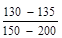 |
126 - 128 |
|
Эксплуатационные затраты |
100 |
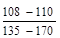 |
107 - 109 |
Примечание. Показатели числителя относятся к одноярусным подземным гаражам в сопоставлении с одноэтажными наземными, в знаменателе - к многоярусным подземным (2 - 5 уровней) в сопоставлении с соответствующими по этажности наземными рамповыми гаражами.
Изменения строительной стоимости и эксплуатационных затрат, %, при различной компоновке гаражей по отношению к жилым зданиям показаны в табл. 6.
|
Тип гаража |
|||
|
отдельно стоящий |
пристроенный (к индивидуальному 1 - 2-этажному дому) |
встроенный (в многоэтажное здание) |
|
|
Строительная стоимость |
100 |
110 - 115 |
175 - 200 |
|
Эксплуатационные затраты |
100 |
95 - 100 |
150 - 180 |
Приведенные затраты Пс на освоение, инженерное оборудование и благоустройство городской территории отводимой под участок гаража или автостоянки, определяются по формуле:
где F - площадь участка гаража или автостоянки, м2/машино-место; Кт и Эт - капитальные и эксплуатационные затраты на освоение, инженерное оборудование и благоустройство городской территории руб./га; Ксн - затраты, связанные со сносом строений при строительстве на реконструируемых территориях, руб./га; mк, mэ - удорожающие коэффициенты, связанные с необходимостью освоения под городское строительство неудобных и сельскохозяйственных земель.
Градостроительный смысл понятия «стоимость участка» при определении экономической эффективности различных типов гаражей и автостоянок состоит в необходимости освоения дополнительных городских территорий при применении сооружений с большими удельными показателями расхода территории, т.е., стоимость участка должна определяться величиной затрат, необходимых для освоения равноценной по площади территории. Рекомендуемые показатели затрат, связанных с освоением, инженерным оборудованием и благоустройством городских территорий для условно-усредненных (нормальных) условий строительства II климатического и I территориального района тыс. руб./га, селитебной территории приводятся в табл. 7.
|
Численность населения города, тыс. чел. |
|||||
|
50 |
100 |
250 |
500 |
1000 |
|
|
Строительная стоимость в среднем по городу |
50 |
73 |
83 |
91 |
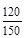 |
|
для центральной зоны |
59 |
97 |
115 |
128 |
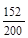 |
|
для периферийных районов |
47 |
68 |
16 |
83 |
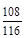 |
|
Эксплуатационные затраты: |
|||||
|
в среднем по городу |
5,0 |
8,3 |
9,1 |
9,4 |
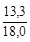 |
|
для центральной зоны |
6,0 |
11,1 |
12,6 |
13,2 |
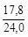 |
|
для периферийных районов |
4,7 |
7,7 |
8,3 |
8,5 |
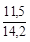 |
Примечание. По всем городам показатели приводятся без учета стоимости головных сооружений. По городам с населением 1000 тыс. человек и более под чертой даны затраты на строительство метрополитена.
Затраты времени на передвижения Т, связанные с применением различных типов гаражей и автостоянок, определяются по формуле:
где Т1 - дополнительные (по отношению к существующим) затраты времени населением города на передвижения, вызываемые увеличением городской территории при отводе участков под гаражи; Т2 - затраты времени на подход к гаражу или автостоянке от места проживания владельца автомобиля; Т3 - относительная экономия затрат времени на передвижения, получаемая за счет увеличения числа поездок с использованием личного автомобиля (по сравнению с поездкой на общественном транспорте) при приближении гаража и автостоянки (в результате изменения вместимости) к месту проживания владельца.
Для определения этих показателей (в часах за год на одно машино-место) рекомендуются расчетные методы, в основу которых положена номенклатура технико-экономических показателей, позволяющая отобразить влияние разнообразных градостроительных условий на организацию хранения автомобилей (численность населения города и плотность его расселения, размер и размещение данной площадки в плане города, концентрация объектов массового тяготения и планировочные приемы застройки жилых комплексов, подвижность населения и коэффициент пользования транспортом, расчетный уровень автомобилизации, соотношение затрат времени на поездку общественным и индивидуальным видами транспорта и другие факторы).
Учет дополнительных затрат времени населения города на передвижения, вызываемых увеличением городской территории при массовом отводе участков под гаражи и автостоянки (Т1), обусловливается тем, что при проектировании городов по существующим нормативам под хранение личных автомобилей отводится 1,2 - 2 м2 селитебной территории на человека, вместо требуемых 4 - 6 м2/чел. (при уровне автомобилизации 150 - 180 автомобилей на 10000 жителей). Поэтому при осуществлении программы строительства гаражей и стоянок территория города будет расти более быстрыми темпами. Это повлечет за собой увеличение средней дальности передвижения, а соответственно и затрат времени населением, увеличение которых будет зависеть от удельных размеров участков принимаемых типов гаражей или автостоянок (по отдельным типам гаражей колебания удельных показателей расхода территории составляют 10 - 15 раз).
Показатель Т1 для гаражей и автостоянок, размещаемых на территории с интенсивным пешеходным движением, когда наряду с увеличением средней дальности поездки увеличивается и дальность пешеходных передвижений, определяется по формуле
Для гаражей и автостоянок, размещаемых в коммунальных зонах жилых районов или на периферии селитебной зоны, или в промышленно-коммунальной зоне города, определяется по формуле
где P0 - общая подвижность населения города, передвижений в год на человека; A - количество личных автомобилей, обеспечиваемое гаражами или автостоянками, машино-мест на 1000 чел; DLп - увеличение средней дальности поездки на транспорте в результате роста городской территории; q - средний по городу коэффициент пользования транспортом; Vc - средневзвешенная скорость сообщения на всех видах городского транспорта, км/час; Lпер - средняя дальность пешеходных передвижений, км; j - коэффициент, определяющий количество пешеходных передвижений в пределах межмагистральной территории, на протяженность которых оказывает влияние размещение гаражей или автостоянок; п - коэффициент, показывающий влияние увеличения удельного показателя межмагистральной территории, приходящегося на 1 человека, на увеличение средней дальности пешеходных передвижений; Vпеш - скорость пешехода, км/час.
Увеличение средней дальности поездки определяется по формуле
где λ - коэффициент общей компактности планировочного решения города; S - территория, освоенная городским транспортом, рассчитанная по существующим нормативам, км2; S¢ - то же, но с учетом территории, отводимой под участки гаражей или автостоянок данного типа.
Коэффициент п, показывающий влияние увеличения территории жилого района на увеличение средней дальности пешеходных передвижений, определяется по формуле
где Sp - укрупненный показатель размера территории жилого района (включая микрорайонные территории) по существующим нормативам; S¢p - то же, но с учетом территории, отводимой под участки гаражей или автостоянок данного типа.
Показатель затрат времени на подход к гаражу или автостоянке от места проживания владельца автомобиля (Т2) определяется по формуле
где r - средний радиус доступности гаража или автостоянки, км, определяемый по формуле
где g - коэффициент непрямолинейности подходов; a - коэффициент эксцентриситета для данного расположения гаража или стоянки по отношению к обслуживаемой территории; Q - вместимость ????? автостоянки, машино-мест; C - норма жилищной обеспеченности, ? чел.; δ - плотность жилого фонда брутто, м2/га; Pн - среднее количество поездок, совершаемое из дома на легковом автомобиле за год; Ω - средний коэффициент наполнения личного автомобиля.
По изменению среднего радиуса доступности (r) от перечисленных показателей определяют затраты времени на подход к гаражу или автостоянке еще до их размещения на территории застройки.
Показатель относительной экономии затрат времени на передвижения, получаемый за счет увеличения числа поездок на личном автомобиле (по сравнению с поездкой на общественном транспорте) при приближении гаража или автостоянки (в результате изменения их вместимости) к месту проживания владельца (Т3), устанавливается в соответствии с результатами проведенных в последние годы обследований. Эти обследования показали, что сокращение времени подхода к местам хранения приводит к увеличению частоты трудовых поездок на личном автомобиле и сокращению пользования общественным транспортом, в результате чего достигается экономия затрат времени на передвижения. Знак «минус» перед Т3 показывает, что этот показатель обозначает не затраты времени на передвижения, а экономию их, причем экономию относительную, так как она определяется только по отношению к типу гаража или автостоянки, имеющему наибольшее время подхода. Если же использование личного автомобиля приводит к увеличению затрат времени на передвижения по сравнению с поездкой на общественном транспорте, то знак минус меняется на плюс и Т3 обозначает дополнительные затраты времени, возникающие при использовании индивидуального транспорта, которые суммируются с дополнительными затратами времени, вызываемыми увеличением городской территории (Т1) и затратами времени на подход к месту хранения автомобиля (Т2).
Относительная экономия затрат времени на передвижения Т3 устанавливается по формуле:
Т3 = 2DТΩТb[(108,9 - 19,3r) - (108,9 - 19,3rmax)], (14)
где DТ - экономия затрат времени на передвижения при пользовании личным автомобилем по сравнению с поездкой на общественном транспорте, чел/ч, в одном направлении, которая определяется по формуле:
где λТ - коэффициент компактности размещения мест труда; Vпер(о), Vпер(и) - средняя скорость перемещения соответственно при пользовании общественным и индивидуальным транспортом, км/час; ΩТ - коэффициент наполнения личного автомобиля при трудовых поездках; b - коэффициент технической готовности автомобилей; r - радиус доступности гаража или автостоянки данного типа, км; rmax - радиус доступности наибольшего по вместимости из сравниваемых типов гаражей или автостоянок, км.
Показатели, приводимые в формулах расчета затрат (7) - (15), отражают все многообразие градостроительных условий, оказывающих влияние на организацию системы хранения автомобилей. Так например, показатели N, Ро характеризуют численность населения города и его подвижность, показатель δ - характер застройки района, показатели S, L, λ - размер территории города, концентрация объектов массового тяготения и трудность передвижения по уличной сети, т.е. планировочное решение города, показатели Vпер(о), q - уровень развития общественного транспорта, показатели A, Ω, Vпер(и), b - уровень развития и использования индивидуального транспорта, показатель С - уровень развития городского строительства и т.п.
Народнохозяйственный профиль города, профессиональный состав его населения характеризуются величиной стоимостной оценки затрат времени (С1), которая в соответствии с принятой методикой определяется для каждого города на основе территориальных и отраслевых индексов производительности труда. При проведении расчетов по обоснованию выбора типов гаражей и автостоянок и их размещения в городской застройке на расчетный срок стоимостная оценка затрат времени может приниматься для различных городов в размере 0,8 - 1,2 руб./ч.
На основании проведенных расчетов устанавливается «шкала эффективности» типов гаражей, в которой гаражи располагаются по нарастанию величины суммарных приведенных затрат. Однако для окончательного выбора рациональных типов гаражей необходимо определить основные принципы размещения мест хранения на территории городской застройки, которые соответствовали бы характеру использования автомобилей в градостроительных условиях различных районов города, а также транспортной политике в отношении развития автомобилизации, проводимой в городе или отдельных его районах.
На ближайшие 5 - 15 лет уровень автомобилизации конкретного города n, или легковых машин на 1000 жителей определяется по формуле
где n0 - уровень автомобилизации города в исходном году;
А1 - продажа легковых автомобилей населению в СССР в этом году, тыс. шт.;
Cг - сумма вкладов населения в сберегательных кассах в данном городе в исходном году, млн. руб.;
? - фактор, учитывающий климатические условия республики (в РСФСР, Украинской и Казахской СССР - области, в которой находится данный город),
где a - количество дней в году с температурой выше минус 5 °С, X2 - фактор, учитывающий пустоту автомобильных дорог
где b1 = I1/H1, км/1000 жит. - плотность автомобильных дорог в i-ой республике (в РСФСР, Украинской и Казахской ССР - области, в которой находится данный город),
b0 = I0/H0, км/1000 жит. - плотность автомобильных дорог в СССР,
I1, I0 - протяженности автомобильных дорог (все дороги) данной республики (области) и в СССР в исходном году, км,
H1, H0 - население данной республики (области) и СССР в исходном году, в тыс. жителей,
C0 - сумма вкладов населения в сберегательных кассах в СССР в исходном году, млрд. руб.
H1 - население данного города в исходном году, тыс. жителей.
Данные для расчета могут быть получены из следующих источников: п0 - в ГАИ МВД города, Ai - по изданию «Результаты деятельности предприятий и организация по техническому обслуживанию и ремонту транспортных средств, принадлежащих гражданам за соответствующий год» (издается ежегодно НИИавтопромом и имеется на станции системы «Автотехобслуживание» крупнейшего и крупного города) или ориентировочно с учетом продажи легковых автомобилей населению и списания старых легковых автомобилей в СССР при расчете на перспективу 5 лет - Ai = 900 тыс., на 10 лет - Ai = 950 тыс. и на 15 лет - Ai = 1000 тыс. автомобилей; а - для республик с приближенно одинаковыми климатическими условиями X1 равняется: Белорусская ССР - 1,04; Узбекская ССР - 1,12, Грузинская ССР - 1,11; Азербайджанская ССР - 1,13, Литовская ССР - 1,08; Молдавская ССР - 1,12; Латвийская ССР - 1,06; Киргизская ССР - 1,09; Таджикская ССР - 1,12; Армянская ССР - 1,08; Туркменская ССР - 1,13; Эстонская ССР - 1,04.
If, L0, Hj, H0, Hг, C0 - по справочнику ЦСУ СССР «Народное хозяйство СССР» за исходный год;
Cг - в Управлении сберегательных касс данного города.
Отдельные районы городов нередко имеют различные уровни автомобилизации, отличающиеся между собой в 1,5 - 2 раза. Для соответствующих расчетов на перспективу следует использовать метод экстраполяции, учитывающий существующие закономерности распределения парка легковых автомобилей по районам данного города.
При определении удельного расхода территории для хранения автомобилей и площади под гаражами в балансе территории Sгар необходимо кроме перспективного уровня автомобилизации учитывать парк индивидуальных мототранспортных средств. Расчетный уровень автомобилизации, учитывающий уровень моторизации и потребности мотопарка в местах хранения (с учетом переводного коэффициента с колясками или без них 1 автомобиль = 3 мотоцикла) nр авт/1000 жителей определяется по формуле
где 1,1 - применяется при уровне автомобилизации свыше 60 авт/1000 жителей; 1,2 - применяется при уровне автомобилизации меньше 60 авт/1000 жителей.
Пример. Определить расчетный уровень автомобилизации на перспективу 10 лет для города N.
Исходные данные. n0 = 34,0 авт/1000 жителей, K = 10; Ai = 950 тыс. авт/год; а = 225 дней; bj = 3,65 км/1000 жителей; b0 = 5,39 км/1000 жителей; Сг = 550 млн. руб.; С0 = 165,7 млрд. руб.; Hг = 1100 тыс. жителей.
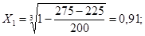
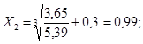
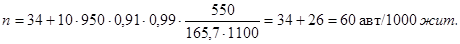
Расчетный уровень автомобилизации через 10 лет с учетом индивидуальных мототранспортных средств составит:
n = 1,2×60 = 72 авт/1000 жителей.
На перспективу (за пределами расчетных сроков генеральных планов городов) средние уровни автомобилизации могут определяться из расчета - 1 легковой автомобиль на две семьи. В это количество автомобилей условно включены и индивидуальные мототранспортные средства. Средняя величина одной семьи города получается по данным переписи населения 1979 г. из Статистического управления.
Предварительно уровень автомобилизации определяется по формуле
где m - средняя величина семьи города, чел.
В зависимости от существующего уровня автомобилизации Д вводится коэффициент К. При: Д = 10 - 20 - K = 0,8; Д = 20 - 30 - К = 0,9; Д = 30 - 40 - K = 1; Д = 40 - 50 - К = 1,05; Д = 50 - 60 - К = 1,1.
Коэффициент К учитывает влияние климата, денежных сбережений населения и плотности автомобильных дорог на расчетный уровень автомобилизации.
Расчетный уровень автомобилизации nр. авт/1000 жителей, определяется по формуле
Для I очереди и расчетных сроков генпланов уровень автомобилизации может определяться по формуле
где np - уровень автомобилизации на расчетный срок генерального плана;
ni - уровень автомобилизации через i-лет;
n0 - уровень автомобилизации города в исходном году;
e - основание натуральных логарифмов.
где x - годовой прирост уровня автомобилизации в исходном году, доли; i - расчетная перспектива, годы.
Пример. Определить уровень автомобилизации на перспективу 15, 20 и 25 лет ?.
Пример. Определить уровень автомобилизации на перспективу 15, 20 и 25 лет для города N.
Исходные данные в текущем году n0 = 34,2 авт/1000 жителей, в предыдущем году: ni = 31,5 авт/1000 жителей, m = 3,2 чел.
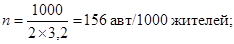
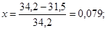
np = 156×0,9 = 140 авт/1000 жителей
Следовательно, уровень автомобилизации через 10 лет составит:
Уровень автомобилизации через 20 лет составит
Уровень автомобилизации через 20 лет составит:
n25 = 114 авт/1000 жителей.
|
Вид сооружения, область применения |
Схема сооружений |
Этажность |
Вместимость секции |
Площадь участка, м2, на одно машино-место |
||
|
наземных |
подземных |
|||||
|
1 |
Открытые стоянки |
- |
- |
По расчету |
25 |
|
|
Применение не ограничивается |
||||||
|
2 |
Отдельные боксы |
1 |
- |
1 - 3 |
35 - 45 |
|
|
В условиях усадебной застройки |
||||||
|
3 |
Блоки боксов |
1 |
- |
10 - 50 |
35 - 45 |
|
|
Поселки городского типа, малые и средние города |
||||||
|
4 |
Малоэтажные наземные |
2 - 3 |
- |
100 - 300 |
15 - 25 |
|
|
Города различной величины, районы реконструкции крупных городов |
||||||
|
5 |
Подземные |
1 |
100 |
25,0 |
||
|
В городах |
2 |
200 |
16,7 |
|||
|
Ограничивается гидрогеологическими условиями |
3 |
300 |
12,5 |
|||
|
6 |
Многоэтажные наземные |
5 |
- |
500 |
10 |
|
|
В городах |
||||||
|
7 |
Комбинированные |
5 |
1 |
600 |
8,0 |
|
|
В городах |
5 |
2 |
700 |
7,0 |
||
|
5 |
3 |
800 |
6,0 |
|||
|
Вид сооружения, область применения |
Схема сооружений (разрез и план) |
Этажность |
Вместимость секции |
Площадь участка, м2, на одно машино-место |
|
|
1 |
Пристроенные гаражи рампового типа |
4 - 6 |
100 - 500 |
8 - 12 |
|
|
В административных, производственных и общественных зданиях различного назначения |
|||||
|
2 |
Встроенные подземные одноярусные гаражи |
1 |
25 - 200 |
5 - 10 |
|
|
Под жилыми, административными, производственными и общественными зданиями (в их контуре) |
|||||
|
То же, встроенные подземные многоярусные гаражи |
|||||
|
3 |
Под зданиями и прилегающими к ним участками (с количеством подземных ярусов не более трех) |
2 - 3 |
50 - 300 |
5 - 7* |
|
|
4 |
Гаражи в верхних этажах или на кровле |
1 |
100 - 300 |
1 - 2 |
|
|
В производственно-технических, коммунальных зданиях и сооружениях |
|||||
|
5 |
Встроенные подземные гаражи |
2 - 3 |
100 - 500 |
5 - 7* |
|
|
Обслуживающие группу жилых, административных, производственных, общественных и других зданий и сооружений, в том числе с использованием перепадов рельефа (с количеством подземных ярусов не более трех)* |
* Даны показатели площади, необходимой вне контура основного здания.
|
Способ расстановки автомобилей |
Количество автомобилей на 100 м полосы стоянки |
Площадь на одно машино-место, м2 |
|
|
Автомобили на автостоянке расположены параллельно проезду |
18 |
30,5 |
|
|
То же, с двух сторон проезда |
36 |
28 |
|
|
Автомобили на автостоянке расположены под углом 30° |
21 |
37 |
|
|
То же, с двух сторон проезда |
42 |
28,8 |
|
|
Автомобили на автостоянке расположены под углом 45° |
29 |
28,5 |
|
|
То же, с двух сторон проезда |
58 |
22,5 |
|
|
Автомобили на автостоянке расположены под углом 60° |
39 |
26,2 |
|
|
То же, с двух сторон проезда |
78 |
19,8 |
|
|
Автомобили на автостоянке расположены под углом 90° |
45 |
25,8 |
|
|
То же, с двух сторон проезда |
90 |
18 |
|
Схема планировки стоянки |
Способ расстановки автомобилей |
Количество автомобилей на стоянке |
Площадь на одно машино-место, м2 |
|
В кармане-уширении жилой улицы |
25 |
25,8 |
|
|
С проездами одностороннего движения |
50 |
21,8 |
|
|
С проездами одностороннего движения |
100 |
19,8 |
Приводимые ниже наиболее характерные типовые решения размещения автостоянок и гаражей в сложившихся и строящихся жилых районах и микрорайонах позаимствованы из альбома «Примерных решений размещения стоянок и гаражей легковых автомобилей в микрорайонах и жилых районах» (утверждены Госгражданстроем и введены в действие с 1/XI.77 г.)
а - план, б - фрагмент
А - гараж
подземный под жилым зданием и прилегающими участками. На части его
кровли размещается
детская игровая площадка, остальная территория отведена под газон
(вместимость - 146 машино-мест,
площадь без учета проездов 396 м2); Б - неохраняемая открытая
автостоянка (вместимость 28 машино-мест,
площадь без учета проездов 396 м2); В - открытая автостоянка
в кармане-уширении проезжей части
(вместимость 21 машино-место, площадь без учета проездов 89,0 м2)
a - план; б - фрагмент;
А
- для постоянного хранения гараж наземный многоэтажный (вместимость - 500
машино-мест,
площадь участка 4465 м2); Б - для постоянного хранения охраняемая
открытая автостоянка
(вместимость 40 машино-мест, площадь - 900 м2); В - для временного
хранения открытая автостоянка
на изолированном участке (вместимость 21 машино-место, площадь участка 640 м2)
Размещение и вместимость автостоянок и гаражей, показанные на примерах генпланов жилых районов и микрорайонов (примеры 1 - 5, рис. 18 - 22 фрагменты по каждому примеру на генпланах заштрихованы) в соответствии со СНиП II-60-75*.
При разработке фрагментов уточняется характер застройки и резервируется территория для размещения наземных и подземных сооружений. На I очередь строительства допускается использование резервируемых территорий для малоэтажных гаражей и открытых автостоянок.
Пример 1 (рис. 18). В микрорайоне размещаются подземные и двухуровненные гаражи, располагаемые на перепадах рельефа, а за пределами микрорайона - многоэтажные гаражи большой вместимости с открытой автостоянкой для постоянного хранения автомобилей.
Автостоянки для временного хранения запроектированы на отдельных площадках и на уширении проездов в пределах микрорайона.
а - план; б, в, г - фрагменты; б - фрагмент 3.1; А - для постоянного хранения гараж подземный, на его кровле газон (вместимость 52 машино-места, площадь без учета газона 180 м2); Б - для временного хранения открытая автостоянка (вместимость 18 машино-мест, площадь без учета проездов 74 м2); В - для временного хранения открытая автостоянка на уширении проезда (вместимость 9 машино-мест, площадь без учета проездов 90 м2), в - фрагмент 3.2; А - неохраняемая открытая автостоянка в кармане проезда для постоянного хранения (вместимость 12 машино-мест, площадь без учета проезда 120 м2); Б - открытая автостоянка в кармане местного проезда для временного хранения (вместимость 36 машино-мест, площадь 382 м2); г - фрагмент 3.3.; А - охраняемая открытая автостоянка для постоянного хранения (вместимость 33 машино-места, площадь 843 м2); Б - открытая автостоянка у глухого торца жилого здания для постоянного хранения (вместимость 12 машино-мест, площадь м2); В - открытая автостоянка на уширении проезда для временного хранения (вместимость 26 машино-мест, площадь без учета проезда 310 м2).
а - план; б - фрагмент; А - гараж
полуподземный, на его кровле открытая автостоянка
(вместимость гаража 53 машино-места, вместимость открытой автостоянки 36
машино-мест,
площадь участка 1527 м2); Б - открытая автостоянка на уширении
проезда (вместимость
12 машино-мест, площадь 117 м2 без учета проезда).
очередь включает строительство двух гаражей на перепадах рельефа, а также открытых автостоянок в пределах микрорайона.
Размещение гаражей на перепадах рельефа учитывает сохранение определенной непрерывности зеленой зоны от пруда к зоне общественных сооружений.
Условные обозначения к примерам 1 - 5
м - гаражи наземные многоэтажные;
пп - гаражи подземные и полуподземные с автостоянкой на кровле;
пк - гаражи подземные и полуподземные с использованием кровли под площадки отдыха или хозяйственно-бытовые;
п - гаражи подземные;
р - автостоянки открытые для временного хранения;
оп - охраняемые автостоянки (открытые) для сезонного хранения (в одном уровне на I очередь с проектированием многоуровневых автостоянок и гаражей на перспективу);
о - неохраняемые открытые автостоянки для постоянного хранения (одноуровневые на I очередь с постройкой многоуровневых на перспективу);
70 - цифры, обведенные кружком, показывают вместимость сооружений для хранения автомобилей на расчетный срок, машино-мест;
500 - цифры, обведенные двумя кружками, показывают вместимость сооружений для хранения автомобилей на перспективу, машино-мест.
Пример 2 (рис. 19). Микрорайоны входят в жилой район, размещаемый в городе I климатического района. В микрорайонах запроектированы многоэтажные наземные и подземные гаражи.
Открытые площадки для постоянного хранения автомобилей не предусматриваются в связи с климатическими особенностями города.
Открытые автостоянки для временного хранения запроектированы на специально выделенных площадках и на уширениях проездов к жилым домам.
В многоэтажных гаражах размещено 69 % автомобилей общего парка, что обусловлено высокой плотностью жилой застройки и невозможностью соблюдения разрывов.
На I очередь строительства запроектированы многоэтажные гаражи и автостоянки временного хранения, предусмотренные на расчетный срок.
а - план; б - фрагмент; А - гараж наземный
многоэтажный для постоянного хранения
(вместимость 300 машино-места, площадь 5160 м2); Б - открытая
автостоянка в кармане
проезда для временного хранения (вместимость 21 машино-места, площадь 223 м2);
В - открытая автостоянка в кармане проезда для временного хранения (вместимость
39
машино-мест, площадь 414 м2).
Пример 3 (рис. 20). Многоэтажные гаражи размещаются в коммунальной зоне, а подземные и полуподземные - в микрорайонах. Автостоянки для постоянного и временного хранения размещаются на уширениях проездов к жилым домам, разворотных площадках, местных проездах магистралей.
Пример 4 (рис. 21). В микрорайоне размещаются подземные гаражи большой вместимости с использованием их кровли под автостоянки. Гараж на 170 мест расположен под выставочным комплексом. Открытые площадки для постоянного хранения не предусматривались, так как обеспеченность гаражами удовлетворяет расчетную потребность в машино-местах.
Пример 5 (рис. 22). Автостоянки для хранения расчетного парка легковых автомобилей размещаются частично с использованием территории, прилегающей к магистралям различного назначения, т.е. за пределами застройки микрорайонов. Многоэтажные гаражи полностью удовлетворяют потребность в машино-местах.
Открытые автостоянки для постоянного и временного хранения запроектированы вдоль скоростной магистрали между местным проездом и магистралью; на расчетный срок предусмотрены многоуровневые гаражи.
Рис. 23. Принципы формирования номенклатуры типов гаражей
На основе применения блок-элементного метода типового проектирования рассмотрен один из путей создания рациональных типов гаражей, удовлетворяющих требованиям массового строительства.
Предложения по формированию типов гаражей базируются на анализе их функциональной и конструктивно-планировочной организации и на исследовании возможности применения действующей номенклатуры серийных железобетонных изделий. Главной задачей в этом направлении является максимальное снижение удельной материалоемкости сооружений. Гаражи проектируются неотапливаемыми с легким стеновым ограждением. В дальнейшем предусматривается возможность устройства системы отопления с усовершенствованием стенового ограждения.
Рис. 24. Определение требуемой
ширины стоянки для автомобилей
ВАЗ, Москвич, Запорожец.
Расчет требуемой ширины стоянки:
Втр = 2×4,7 + Впр;
Впр = ОС - а;
OC = Rн + 0,7;
ОА = ОА1 = Rв - 0,2 = 2,9;
ОВ = Rв - 0,5 = 2,6;
Впр = 6,6 - 1,3 = 5,3;
Втр = 2×4,7 + 5,3= 14,7, где Втр - требуемая ширина стоянки; Впр - ширина проезда; Rв - внутренний радиус поворота; Rн - внешний (наружный) радиус поворота.
На рис. 23 - 40 показаны возможности формирования конструктивно-планировочных ячеек (КПЯ) на основе установленных оптимальных параметров зоны стоянки, выбор и применение сборных железобетонных конструкций. Приведены также схемы объемно-планировочных конструктивных решений отдельных типов гаражей.
Все типы строятся на основе единой системы конструктивно-планировочных ячеек, блокирование которых по горизонтали и вертикали позволяет получать объемы различной величины в пространственной конфигурации в зависимости от требований конкретных градостроительных условий. Предусмотрена возможность поэтапного увеличения вместимости гаражей.
Рис. 25. Сравнительный анализ
использования площади стоянок и
выбор оптимальных конструктивных параметров.
Кп - коэффициент эффективности = ; а - ширина проекции автомобиля; b - длина проекции автомобиля; c, d - размеры пролетов; п - количество размещаемых в пролете автомобилей.
Рис. 26. Принципы формирования объемно-планировочных элементов
Рис. 27. Объемно-планировочные элементы гаражей
Рис. 28. Схемы возможной блокировки секций
1, 2 - блокировка по продольным осям без
сдвижки; 3 - блокировка со сдвижкой;
4 - блокировка по продольным осям со сдвижкой; 5 - блокировка по
продольным осям
различных по величине блок-секций.
Рис. 29. Типы конструктивно-планировочных ячеек
Рис. 30. Номенклатура применяемых сборных элементов серии ИИ-04
Рис. 31. Вариант конструктивно-планировочных ячеек с пролетом 15 м
Рис. 32. Примеры устройства стенового ограждения гаражей:
1 - стеклопрофилит; 2 - фахверковая стеновая
панель; 3 - металлическое ограждение; 4 - асбестоцементные
коробчатые профили с остеклением фрамугами; 5 - асбестоцементные
коробчатые профили без остекления;
6 - железобетонная стеновая панель с металлическими перилами; 7 -
железобетонная стеновая панель с
остеклением металлических переплетов; 5 - входная дверь и въездные
ворота; 9 - парапетное ограждение
(металлический каркас с асбоцементным ограждением); 10 - стеклоблоки.
Рис. 33. Общий тип архитектурно-конструктивного решения
Рис. 34. Подземный одноэтажный гараж вместимостью 106 машино-мест:
объем,
м3: строительный - 7357, на 1 машино-место - 69,4; площадь застройки,
м3:
застройки - 2767, полезная - 2691, полезная и 1 машино-место - 22,2, застройки
на 1 машино-место- 26,1
Рис. 35. Подземный двухэтажный гараж вместимостью 240 машино-мест:
объем, м3:
строительный - 1703, на 1 машино-место - 71; площадь, м2 застройки -
5904,4,
полезная - 5867, полезная на 1 машино-место - 24,4, застройки на 1 машино-место
- 15,5
Рис. 36. Подземный многоэтажный гараж вместимостью 269 машино-мест:
объем, м3:
строительный - 18739, на 1 машино-место 63,6; площадь, м2: застройки
- 2135,
полезная - 6255, полезная на 1 машино-место - 21,1, застройки на 1 машино-место
- 7,21
Рис. 37. Наземный многоэтажный гараж вместимостью 204 машино-мест:
объем,
м3: строительный - 13879, на 1 машино-место - 65; площадь, м2:
застройки - 1542,
полезная - 4593, полезная на 1 машино-место - 22,4, застройки на 1 машино-место
- 7,5.
Рис. 38. Комбинированный гараж вместимостью 504 машино-мест:
объем,
м3: строительный - 31252, строительный подземной части - 7501, на 1
машино-место - 62; площадь, м2:
застройки - 1836, полезная - 8977, полезная на 1 машино-место - 21,4, застройки
на 1 машино-место - 3,6.
Рис. 39. Гараж террасного типа вместимостью 320 машино-мест: площадь, м2: застройки - 8734,5, полезная - 7654,5, полезная на 1 машино-место - 23,9, застройки на 1 машино-место - 27,3.
Рис. 40. Наземный многоэтажный
гараж на участке со сложным рельефом
вместимостью 470 машино-мест:
объем,
м3: строительный - 33366, на 1 машино-место - 71; площадь, м2:
застройки - 287,4,
полезная - 10906, полезная на 1 машино-место - 23,2, застройки на 1
машино-место - 6,1
Для примера в основу конструктивного решения принят сборный железобетонный каркас серии ИИ 04. Возможны два варианта применения этой серии:
а) рамный каркас с продольными рамами из «Т» и «Г»-образных опор и ригелей серии ИИ 04-14. Конструктивная сетка 9 (4,5 + 6 + 4,5) с высотой этажа 2,8 м. При ригеле, укороченном до 4,5 м, возможно получение сетки 6 и 9 (4,5 + 6 + 4,5);
б) рамно-связевой каркас с поперечными рамами из элемента серии ИИ-04. Конструктивная сетка 6 и 9 (4,5 + 6 + 4,5). Пролет в 9 м перекрывается плитами серии ИИ-04-4 вып. 21. Поперечные связи устанавливаются в рамповых блоках. Модернизация серии ИИ-04 и внедрение в производство плит перекрытия L = 15 м позволит применить каркас с сеткой опор 15´6 или 15´3 м, получив, таким образом, ячейку пятнадцатиметровой ширины без промежуточных опор.
Кровля всех типов гаражей может быть использована для временного хранения индивидуальных автомобилей.
Стеновое ограждение может быть различного вида в зависимости от климатических условий и эстетических требований. На рисунке 32 приведены варианты устройства стеновых заполнений и ограждений простейшей конструкции, одинаково пригодных в отапливаемых и неотапливаемых гаражах. Для заполнения используются: стеклопрофилит, стеклоблоки и асбестоцементные профильные элементы, изготовляемые экструзионным способом.
Стены одноярусных подземных гаражей выполняются из сборных элементов серии 3-400-1. В многоярусных подземных гаражах предлагается устройство стен из ребристых панелей серии ИИ-20, устанавливаемых вертикально с замоноличиванием швов.
Сравнительные технико-экономические показатели разработанного КиевНИИП градостроительства (см. рис. 37) и типового проекта гаражей на 200 автомобилей представлены в таблице.
Сравнительная таблица технико-экономических показателей (с учетом рампы)
|
Единица измерения |
Типовой проект № 503-139 |
Предложение КиевНИИП градостроительства |
Экономия, % |
|
|
Площадь застройки |
м2 |
1840 |
1512,4 |
16 |
|
Общая полезная площадь |
-«- |
5131 |
4593 |
10,5 |
|
Площадь на одно машино-место |
-«- |
25,6 |
22,4 |
12,6 |
|
Общий строительный объем |
м3 |
17600 |
13879 |
21,1 |
|
Строительный объем на одно машино-место |
-«- |
88 |
65 |
26,2 |
|
Расход бетона |
-«- |
1346 |
972,2 |
28 |
|
Расход стали |
т |
176 |
123,2 |
30 |
В зависимости от величины парка автомобилей и перспектив его роста при развитии системы СТО в городах и населенных пунктах рекомендуется использовать их следующие типы.
|
Количество автомобилей в городе или населенном пункте на расчетный срок, тыс. |
Тип станций обслуживания (по количеству постов) |
|||||
|
10 |
15 - 25 |
50 |
100 |
200 |
||
|
10 |
1,5 |
1 |
- |
- |
- |
- |
|
20 |
3 |
- |
1 |
- |
- |
- |
|
30 |
4,5 |
1 |
1 |
- |
- |
- |
|
40 |
6 |
- |
2 |
2 |
- |
- |
|
50 |
7,5 |
- |
- |
1 |
- |
- |
|
60 |
9 |
1 |
- |
1 |
- |
- |
|
70 |
10,5 |
- |
1 |
1 |
- |
- |
|
80 |
12 |
1 |
1 |
1 |
- |
- |
|
90 |
13,5 |
- |
2 |
1 |
- |
- |
|
100 |
15 |
- |
- |
- |
1 |
- |
|
200 |
30 |
4 |
3 |
- |
1 |
- |
|
300 |
45 |
6 |
2 |
- |
2 |
- |
|
500 |
75 |
10 |
10 |
2 |
1 |
- |
|
1000 |
150 |
18 |
6 |
- |
5 |
1 |
Примечание: В зависимости от местных условий допускается применение большего числа станций меньшей мощности.
СОДЕРЖАНИЕ